A2_flowkit · Opus 5.5 · attempt M8U7Zgn
Batch fk1 · job fk1_A_EXP22004263_21_Mar_2023_flowkit_claude-opus-5-5 · trial A_EXP22004263_21_Mar_2023_flowki__M8U7Zgn. Long tool outputs are cut at 6,000 characters.
Score
0.70
0.70
Minutes
15.7
15.7
Agent cost
$3.51
$3.51
Steps
196
196
Screenshots / images
21
21
2
tool call · Bash
cd /task; ls -la inputs inputs/raw | head -50; cat inputs/plate_layout.csv; cat inputs/gating_strategy.md; ls outputs
3
tool output
inputs: total 20 dr-xr-xr-x 3 root root 4096 Nov 10 16:58 . drwxr-xr-x 4 root root 4096 Nov 10 16:59 .. -r--r--r-- 1 root root 1705 Nov 10 16:58 gating_strategy.md -r--r--r-- 1 root root 2998 Nov 10 16:58 plate_layout.csv dr-xr-xr-x 2 root root 4096 Nov 10 16:58 raw inputs/raw: total 71148 dr-xr-xr-x 2 root root 4096 Nov 10 16:58 . dr-xr-xr-x 3 root root 4096 Nov 10 16:58 .. -r--r--r-- 1 root root 3271636 Nov 10 16:58 Caspase_primaryneurons_caspase_Group_A1.fcs -r--r--r-- 1 root root 2345896 Nov 10 16:58 Caspase_primaryneurons_caspase_Group_A10.fcs -r--r--r-- 1 root root 2466856 Nov 10 16:58 Caspase_primaryneurons_caspase_Group_A11.fcs -r--r--r-- 1 root root 2924488 Nov 10 16:58 Caspase_primaryneurons_caspase_Group_A2.fcs -r--r--r-- 1 root root 3461788 Nov 10 16:58 Caspase_primaryneurons_caspase_Group_A3.fcs -r--r--r-- 1 root root 2663308 Nov 10 16:58 Caspase_primaryneurons_caspase_Group_A5.fcs -r--r--r-- 1 root root 2347300 Nov 10 16:58 Caspase_primaryneurons_caspase_Group_A7.fcs -r--r--r-- 1 root root 2175976 Nov 10 16:58 Caspase_primaryneurons_caspase_Group_A8.fcs -r--r--r-- 1 root root 2898208 Nov 10 16:58 Caspase_primaryneurons_caspase_Group_A9.fcs -r--r--r-- 1 root root 2107360 Nov 10 16:58 Caspase_primaryneurons_caspase_Group_B1.fcs -r--r--r-- 1 root root 1877680 Nov 10 16:58 Caspase_primaryneurons_caspase_Group_B2.fcs -r--r--r-- 1 root root 512020 Nov 10 16:58 Caspase_primaryneurons_caspase_Group_B3.fcs -r--r--r-- 1 root root 2124352 Nov 10 16:58 Caspase_primaryneurons_caspase_Group_B4.fcs -r--r--r-- 1 root root 1223344 Nov 10 16:58 Caspase_primaryneurons_caspase_Group_B5.fcs -r--r--r-- 1 root root 296344 Nov 10 16:58 Caspase_primaryneurons_caspase_Group_B6.fcs -r--r--r-- 1 root root 3457612 Nov 10 16:58 Caspase_primaryneurons_caspase_Group_C1.fcs -r--r--r-- 1 root root 3204892 Nov 10 16:58 Caspase_primaryneurons_caspase_Group_C10.fcs -r--r--r-- 1 root root 2299636 Nov 10 16:58 Caspase_primaryneurons_caspase_Group_C11.fcs -r--r--r-- 1 root root 2894176 Nov 10 16:58 Caspase_primaryneurons_caspase_Group_C2.fcs -r--r--r-- 1 root root 2465920 Nov 10 16:58 Caspase_primaryneurons_caspase_Group_C3.fcs -r--r--r-- 1 root root 3199456 Nov 10 16:58 Caspase_primaryneurons_caspase_Group_C5.fcs -r--r--r-- 1 root root 4294072 Nov 10 16:58 Caspase_primaryneurons_caspase_Group_C7.fcs -r--r--r-- 1 root root 1889812 Nov 10 16:58 Caspase_primaryneurons_caspase_Group_C8.fcs -r--r--r-- 1 root root 3330352 Nov 10 16:58 Caspase_primaryneurons_caspase_Group_C9.fcs -r--r--r-- 1 root root 3529864 Nov 10 16:58 Caspase_primaryneurons_caspase_Group_D1.fcs -r--r--r-- 1 root root 2669932 Nov 10 16:58 Caspase_primaryneurons_caspase_Group_D2.fcs -r--r--r-- 1 root root 2792224 Nov 10 16:58 Caspase_primaryneurons_caspase_Group_D3.fcs -r--r--r-- 1 root root 1691668 Nov 10 16:58 Caspase_primaryneurons_caspase_Group_D4.fcs -r--r--r-- 1 root root 671032 Nov 10 16:58 Caspase_primaryneurons_caspase_Group_D5.fcs -r--r--r-- 1 root root 1691308 Nov 10 16:58 Caspase_primaryneurons_caspase_Group_D6.fcs file,well,genotype,treatment,stain,replicate,is_control,control_type Caspase_primaryneurons_caspase_Group_A1.fcs,A1,WT,NT,unstained,1,yes,unstained Caspase_primaryneurons_caspase_Group_A2.fcs,A2,WT,NT,zombie_nir_only,1,yes,single_stain_zombie_nir Caspase_primaryneurons_caspase_Group_A3.fcs,A3,WT,NT,caspase_only,1,yes,single_stain_caspase Caspase_primaryneurons_caspase_Group_A5.fcs,A5,WT,DMSO,caspase_and_zombie_nir,1,yes,vehicle Caspase_primaryneurons_caspase_Group_A7.fcs,A7,WT,NT,caspase_and_zombie_nir,1,yes,untreated Caspase_primaryneurons_caspase_Group_A8.fcs,A8,WT,camptothecin_1uM,caspase_and_zombie_nir,1,no,none Caspase_primaryneurons_caspase_Group_A9.fcs,A9,WT,camptothecin_1uM,caspase_and_zombie_nir,2,no,none Caspase_primaryneurons_caspase_Group_A10.fcs,A10,WT,camptothecin_5uM,caspase_and_zombie_nir,1,no,none Caspase_primaryneurons_caspase_Group_A11.fcs,A11,WT,camptothecin_5uM,caspase_and_zombie_nir,2,no,none Caspase_primaryneurons_caspase_Group_B1.fcs,B1,WT,camptothecin_10uM,caspase_and_zombie_nir,1,no,none Caspase_primaryneurons_caspase_Group_B2.fcs,B2,WT,camptothecin_10uM,caspase_and_zombie_nir,2,no,none Caspase_primaryneurons_caspase_Group_B3.fcs,B3,WT,camptothecin_20uM,caspase_and_zombie_nir,1,no,none Caspase_primaryneurons_caspase_Group_B4.fcs,B4,WT,camptothecin_20uM,caspase_and_zombie_nir,2,no,none Caspase_primaryneurons_caspase_Group_B5.fcs,B5,WT,unrecorded,unrecorded,0,no,none Caspase_primaryneurons_caspase_Group_B6.fcs,B6,WT,unrecorded,unrecorded,0,no,none Caspase_primaryneurons_caspase_Group_C1.fcs,C1,PGRN_KO,NT,unstained,1,yes,unstained Caspase_primaryneurons_caspase_Group_C2.fcs,C2,PGRN_KO,NT,zombie_nir_only,1,yes,single_stain_zombie_nir Caspase_primaryneurons_caspase_Group_C3.fcs,C3,PGRN_KO,NT,caspase_only,1,yes,single_stain_caspase Caspase_primaryneurons_caspase_Group_C5.fcs,C5,PGRN_KO,DMSO,caspase_and_zombie_nir,1,yes,vehicle Caspase_primaryneurons_caspase_Group_C7.fcs,C7,PGRN_KO,NT,caspase_and_zombie_nir,1,yes,untreated Caspase_primaryneurons_caspase_Group_C8.fcs,C8,PGRN_KO,camptothecin_1uM,caspase_and_zombie_nir,1,no,none Caspase_primaryneurons_caspase_Group_C9.fcs,C9,PGRN_KO,camptothecin_1uM,caspase_and_zombie_nir,2,no,none Caspase_primaryneurons_caspase_Group_C10.fcs,C10,PGRN_KO,camptothecin_5uM,caspase_and_zombie_nir,1,no,none Caspase_primaryneurons_caspase_Group_C11.fcs,C11,PGRN_KO,camptothecin_5uM,caspase_and_zombie_nir,2,no,none Caspase_primaryneurons_caspase_Group_D1.fcs,D1,PGRN_KO,camptothecin_10uM,caspase_and_zombie_nir,1,no,none Caspase_primaryneurons_caspase_Group_D2.fcs,D2,PGRN_KO,camptothecin_10uM,caspase_and_zombie_nir,2,no,none Caspase_primaryneurons_caspase_Group_D3.fcs,D3,PGRN_KO,camptothecin_20uM,caspase_and_zombie_nir,1,no,none Caspase_primaryneurons_caspase_Group_D4.fcs,D4,PGRN_KO,camptothecin_20uM,caspase_and_zombie_nir,2,no,none Caspase_primaryneurons_caspase_Group_D5.fcs,D5,PGRN_KO,unrecorded,unrecorded,0,no,none Caspase_primaryneurons_caspase_Group_D6.fcs,D6,PGRN_KO,unrec … [1,729 more characters not shown]
4
tool call · Bash
cd /task; python -c "
import flowkit as fk, glob
s=fk.Sample('inputs/raw/Caspase_primaryneurons_caspase_Group_A1.fcs')
print(s.pnn_labels, s.pns_labels)
print(s.event_count)
m=s.get_metadata()
for k,v in m.items(): print(k, '=', v)
"5
tool output
['Time', 'FSC-A', 'SSC-A', 'BL1-A', 'RL3-A', 'FSC-H', 'SSC-H', 'FSC-W', 'SSC-W'] ['Time', 'FSC-A', 'SSC-A', 'AAV-GFP-Caspase-A', 'LiveDead-Zombie NIR-A', 'FSC-H', 'SSC-H', 'FSC-W', 'SSC-W'] 90651 par = 9 tot = 90651 mode = L datatype = F byteord = 1,2,3,4 p1f = NA p1l = NA p1s = Time p1v = NA p1n = Time p1b = 32 p1r = 67108864 p1e = 0,0 p2f = NA p2l = 488 p2s = FSC-A p2v = 55 p2n = FSC-A p2b = 32 p2r = 1048576 p2e = 0,0 p3f = NA p3l = 488 p3s = SSC-A p3v = 350 p3n = SSC-A p3b = 32 p3r = 1048576 p3e = 0,0 p4f = NA p4l = 488 p4s = AAV-GFP-Caspase-A p4v = 250 p4n = BL1-A p4b = 32 p4r = 1048576 p4e = 0,0 p5f = NA p5l = 640 p5s = LiveDead-Zombie NIR-A p5v = 300 p5n = RL3-A p5b = 32 p5r = 1048576 p5e = 0,0 p6f = NA p6l = 488 p6s = FSC-H p6v = 55 p6n = FSC-H p6b = 32 p6r = 1048576 p6e = 0,0 p7f = NA p7l = 488 p7s = SSC-H p7v = 350 p7n = SSC-H p7b = 32 p7r = 1048576 p7e = 0,0 p8f = NA p8l = 488 p8s = FSC-W p8v = 55 p8n = FSC-W p8b = 32 p8r = 1024 p8e = 0,0 p9f = NA p9l = 488 p9s = SSC-W p9v = 350 p9n = SSC-W p9b = 32 p9r = 1024 p9e = 0,0 cyt = 0A29009 Attune NxT Acoustic Focusing Cytometer (Lasers: BRV6Y) sys = SEA11065ATTUNE Microsoft Windows 10 Enterprise LTSC spillover = 2,BL1-A,RL3-A,1.000000,0.000000,0.000000,1.000000 btim = 14:47:52 cells = NA com = NA cytsn = 2AFC228071019 date = 20-Mar-2023 etim = 14:48:40 exp = NA fil = A1.fcs inst = NA originality = Original lost = 0 op = Jeff Huang plateid = NA platename = Caspase_primaryneurons proj = caspase smno = Group src = NA timestep = 0.001 vol = 159000 wellid = A1 #coincidentcount = 4247 #flowrate = 200 #laser1asf = 1.05 #laser1color = Blue #laser1delay = 1100 #laser2asf = 1.10 #laser2color = Red #laser2delay = 1497 #laser3asf = 0.86 #laser3color = Violet #laser3delay = 715 #laser4asf = 0.98 #laser4color = Yellow #laser4delay = 303 #laserconfig = BRV6Y #p1label = NA #p1target = NA #p4label = Caspase #p4target = AAV-GFP #p5label = Zombie NIR #p5target = LiveDead #ptdate = 20-Mar-2023 #ptresult = Pass #tr1 = OR_FSC,25000 #widththreshold = 1000 #winext = 0 hostid = SEA11065ATTUNE begindata = 000000008192 enddata = 000003271627 nextdata = 000000000000 beginstext = 000000000000 endstext = 000000000000 beginanalysis = 000000000000 endanalysis = 000000000000
7
tool call · Bash
mkdir -p /task/work /task/outputs; cd /task/work; cat > meta.py <<'EOF'
import flowkit as fk, glob, pandas as pd, numpy as np
lay=pd.read_csv('/task/inputs/plate_layout.csv')
rows=[]
for f in lay.file:
s=fk.Sample('/task/inputs/raw/'+f)
m=s.get_metadata()
d=s.get_events(source='raw')
t=d[:,0]
r={'file':f.split('_')[-1],'wellid':m.get('wellid'),'fil':m.get('fil'),'n':s.event_count,'btim':m.get('btim'),'etim':m.get('etim'),'vol':m.get('vol'),
'coinc':m.get('#coincidentcount'),'flowrate':m.get('#flowrate'),'tr':m.get('#tr1'),
'v':','.join(m.get(f'p{i}v') for i in range(2,8)),'p4s':m.get('p4s'),'p5s':m.get('p5s'),'date':m.get('date'),
'tmin':t.min()*0.001,'tmax':t.max()*0.001,'lost':m.get('lost'),'sm':m.get('smno'),'plate':m.get('platename'),'spill':m.get('spillover')[:20]}
rows.append(r)
df=pd.DataFrame(rows)
pd.set_option('display.width',300); pd.set_option('display.max_columns',30)
print(df.drop(columns=['spill','plate','sm','date']).to_string())
print(df[['date','plate','sm','spill','p4s','p5s']].drop_duplicates())
EOF
python meta.py8
tool output
file wellid fil n btim etim vol coinc flowrate tr v p4s p5s tmin tmax lost
0 A1.fcs A1 A1.fcs 90651 14:47:52 14:48:40 159000 4247 200 OR_FSC,25000 55,350,250,300,55,350 AAV-GFP-Caspase-A LiveDead-Zombie NIR-A 0.000016 0.047477 0
1 A2.fcs A2 A2.fcs 81008 14:49:07 14:49:54 155000 3811 200 OR_FSC,25000 55,350,250,300,55,350 AAV-GFP-Caspase-A LiveDead-Zombie NIR-A 0.000015 0.046251 0
2 A3.fcs A3 A3.fcs 95933 14:50:20 14:51:08 157000 5071 200 OR_FSC,25000 55,350,250,300,55,350 AAV-GFP-Caspase-A LiveDead-Zombie NIR-A 0.000014 0.047097 0
3 A5.fcs A5 A5.fcs 73753 14:51:35 14:52:22 155000 4144 200 OR_FSC,25000 55,350,250,300,55,350 AAV-GFP-Caspase-A LiveDead-Zombie NIR-A 0.000014 0.046300 0
4 A7.fcs A7 A7.fcs 64975 14:52:49 14:53:36 155000 3144 200 OR_FSC,25000 55,350,250,300,55,350 AAV-GFP-Caspase-A LiveDead-Zombie NIR-A 0.000015 0.046240 0
5 A8.fcs A8 A8.fcs 60216 14:54:02 14:54:50 158000 2898 200 OR_FSC,25000 55,350,250,300,55,350 AAV-GFP-Caspase-A LiveDead-Zombie NIR-A 0.000013 0.047272 0
6 A9.fcs A9 A9.fcs 80278 14:55:17 14:56:04 155000 3428 200 OR_FSC,25000 55,350,250,300,55,350 AAV-GFP-Caspase-A LiveDead-Zombie NIR-A 0.000014 0.046415 0
7 A10.fcs A10 A10.fcs 64936 14:56:30 14:57:18 158000 2861 200 OR_FSC,25000 55,350,250,300,55,350 AAV-GFP-Caspase-A LiveDead-Zombie NIR-A 0.000014 0.047212 0
8 A11.fcs A11 A11.fcs 68296 14:57:45 14:58:32 155000 3380 200 OR_FSC,25000 55,350,250,300,55,350 AAV-GFP-Caspase-A LiveDead-Zombie NIR-A 0.000013 0.046350 0
9 B1.fcs B1 B1.fcs 58310 14:59:00 14:59:47 155000 2668 200 OR_FSC,25000 55,350,250,300,55,350 AAV-GFP-Caspase-A LiveDead-Zombie NIR-A 0.000014 0.046332 0
10 B2.fcs B2 B2.fcs 51930 15:00:13 15:01:01 158000 1945 200 OR_FSC,25000 55,350,250,300,55,350 AAV-GFP-Caspase-A LiveDead-Zombie NIR-A 0.000015 0.047158 0
11 B3.fcs B3 B3.fcs 13995 15:01:27 15:02:15 158000 134 200 OR_FSC,25000 55,350,250,300,55,350 AAV-GFP-Caspase-A LiveDead-Zombie NIR-A 0.000016 0.047219 0
12 B4.fcs B4 B4.fcs 58782 15:02:42 15:03:29 155000 1866 200 OR_FSC,25000 55,350,250,300,55,350 AAV-GFP-Caspase-A LiveDead-Zombie NIR-A 0.000014 0.046176 0
13 B5.fcs B5 B5.fcs 33754 15:03:56 15:04:43 155000 1077 200 OR_FSC,25000 55,350,250,300,55,350 AAV-GFP-Caspase-A LiveDead-Zombie NIR-A 0.000015 0.046309 0
14 B6.fcs B6 B6.fcs 8004 15:05:09 15:05:57 159000 81 200 OR_FSC,25000 55,350,250,300,55,350 AAV-GFP-Caspase-A LiveDead-Zombie NIR-A 0.000018 0.047385 0
15 C1.fcs C1 C1.fcs 95817 15:06:24 15:07:11 155000 6153 200 OR_FSC,25000 55,350,250,300,55,350 AAV-GFP-Caspase-A LiveDead-Zombie NIR-A 0.000015 0.046270 0
16 C2.fcs C2 C2.fcs 80166 15:07:37 15:08:25 159000 4357 200 OR_FSC,25000 55,350,250,300,55,350 AAV-GFP-Caspase-A LiveDead-Zombie NIR-A 0.000014 0.047368 0
17 C3.fcs C3 C3.fcs 68270 15:08:52 15:09:39 155000 3180 200 OR_FSC,25000 55,350,250,300,55,350 AAV-GFP-Caspase-A LiveDead-Zombie NIR-A 0.000014 0.046211 0
18 C5.fcs C5 C5.fcs 88646 15:10:05 15:10:53 159000 5380 200 OR_FSC,25000 55,350,250,300,55,350 AAV-GFP-Caspase-A LiveDead-Zombie NIR-A 0.000015 0.047356 0
19 C7.fcs C7 C7.fcs 119052 15:11:19 15:12:07 159000 9110 200 OR_FSC,25000 55,350,250,300,55,350 AAV-GFP-Caspase-A LiveDead-Zombie NIR-A 0.000015 0.047419 0
20 C8.fcs C8 C8.fcs 52267 15:12:35 15:13:21 155000 2542 200 OR_FSC,25000 55,350,250,300,55,350 AAV-GFP-Caspase-A LiveDead-Zombie NIR-A 0.000014 0.046212 0
21 C9.fcs C9 C9.fcs 92282 15:13:48 15:14:36 159000 5852 200 OR_FSC,25000 55,350,250,300,55,350 AAV-GFP-Caspase-A LiveDead-Zombie NIR-A 0.000015 0.047372 0
22 C10.fcs C10 C10.fcs 88797 15:15:02 15:15:50 158000 4556 200 OR_FSC,25000 55,350,250,300,55,350 AAV-GFP-Caspase-A LiveDead-Zombie NIR-A 0.000014 0.047169 0
23 C11.fcs C11 C11.fcs 63651 15:16:17 15:17:04 155000 2901 200 OR_FSC,25000 55,350,250,300,55,350 AAV-GFP-Caspase-A LiveDead-Zombie NIR-A 0.000014 0.046431 0
24 D1.fcs D1 D1.fcs 97824 15:17:30 15:18:18 159000 4462 200 OR_FSC,25000 55,350,250,300,55,350 AAV-GFP-Caspase-A LiveDead-Zombie NIR-A 0.000014 0.047418 0
25 D2.fcs D2 D2.fcs 73937 15:18:44 15:19:32 159000 2841 200 OR_FSC,25000 55,350,250,300,55,350 AAV-GFP-Caspase-A LiveDead-Zombie NIR-A 0.000015 0.047285 0
26 D3.fcs D3 D3.fcs 77334 15:19:59 15:20:46 155000 3701 200 OR_FSC,25000 55,350,250,300,55,350 AAV-GFP-Caspase-A LiveDead-Zombie NIR-A 0.000014 0.046431 0
27 D4.fcs D4 D4.fcs 46763 15:21:12 15:22:00 158000 1601 200 OR_FSC,25000 55,350,250,300,55,350 AAV-GFP-Caspase-A LiveDead-Zombie NIR-A 0.000015 0.047205 0
28 D5.fcs D5 D5.fcs 18412 15:22:27 15:23:15 155000 477 200 OR_FSC,25000 55,350,250,300,55,350 AAV-GFP-Caspase-A LiveDead-Zombie NIR-A 0.000014 0.046374 0
29 D6.fcs D6 D6.fcs 46753 15:23:41 15:24:28 155000 1579 200 OR_FSC,25000 55,350,250,300,55,350 AAV-GFP-Caspase-A LiveDead-Zombie NIR-A 0.000015 0.046241 0
date plate sm spill p4s p5s
0 20-Mar-2023 Caspase_primaryneurons Group 2,BL1-A,RL3-A,1.0000 AAV-GFP-Caspase-A LiveDead-Zombie NIR-A10
tool call · Bash
cd /task/work; cat > qc.py <<'EOF'
import flowkit as fk, pandas as pd, numpy as np
lay=pd.read_csv('/task/inputs/plate_layout.csv')
np.set_printoptions(linewidth=250)
out=[]
for f in lay.file:
s=fk.Sample('/task/inputs/raw/'+f)
d=s.get_events(source='raw')
w=f.split('_')[-1][:-4]
t=d[:,0]
h,_=np.histogram(t,bins=np.arange(0,49,2))
sat={c:np.mean(d[:,i]>=1048575*0.999)*100 for i,c in enumerate(s.pnn_labels) if c not in('Time','FSC-W','SSC-W')}
mx={c:d[:,i].max() for i,c in enumerate(s.pnn_labels)}
neg={c:np.mean(d[:,i]<=0)*100 for i,c in enumerate(s.pnn_labels) if c in ('BL1-A','RL3-A')}
print(w, s.event_count, 'rate/2s:', h)
print(' sat%', {k:round(v,3) for k,v in sat.items()}, 'neg%',{k:round(v,2) for k,v in neg.items()})
print(' mono time', np.all(np.diff(t)>=0), 'max gap s', np.diff(t).max().round(3))
EOF
python qc.py11
tool output
A1 90651 rate/2s: [3165 3631 3613 3874 3824 4186 4428 3911 3816 4024 3993 4172 4831 4581 4420 4289 4032 3785 3747 3247 2811 3074 2892 2305]
sat% {'FSC-A': 4.237, 'SSC-A': 30.438, 'BL1-A': 0.0, 'RL3-A': 0.0, 'FSC-H': 0.0, 'SSC-H': 13.659} neg% {'BL1-A': 9.58, 'RL3-A': 25.74}
mono time True max gap s 0.088
A2 81008 rate/2s: [3029 3135 3251 3391 3552 3571 3432 3347 3436 3427 3430 3904 4540 4455 4447 3717 3985 3372 3562 3378 3045 2709 2614 279]
sat% {'FSC-A': 2.879, 'SSC-A': 26.954, 'BL1-A': 0.0, 'RL3-A': 0.0, 'FSC-H': 0.0, 'SSC-H': 10.538} neg% {'BL1-A': 8.05, 'RL3-A': 25.65}
mono time True max gap s 0.081
A3 95933 rate/2s: [3484 3886 3852 4081 4103 4152 4264 4061 4055 4054 4109 4272 4934 5067 4924 4623 4660 4294 4039 3941 3351 3095 3014 1618]
sat% {'FSC-A': 1.84, 'SSC-A': 26.709, 'BL1-A': 0.001, 'RL3-A': 0.0, 'FSC-H': 0.0, 'SSC-H': 8.626} neg% {'BL1-A': 3.69, 'RL3-A': 12.38}
mono time True max gap s 0.023
A5 73753 rate/2s: [3102 3056 3161 3275 3327 3265 3222 3187 3296 3034 3219 3484 3801 3727 3708 3573 3539 3286 3136 2764 2361 2502 2351 377]
sat% {'FSC-A': 2.152, 'SSC-A': 28.877, 'BL1-A': 0.0, 'RL3-A': 0.087, 'FSC-H': 0.0, 'SSC-H': 10.204} neg% {'BL1-A': 2.8, 'RL3-A': 13.79}
mono time True max gap s 0.073
A7 64975 rate/2s: [2634 2825 3010 3288 3280 2910 3089 2878 2769 2679 2644 3070 3335 3425 3054 2968 2844 2657 2575 2394 2054 2204 2095 294]
sat% {'FSC-A': 1.1, 'SSC-A': 26.416, 'BL1-A': 0.0, 'RL3-A': 0.003, 'FSC-H': 0.0, 'SSC-H': 7.994} neg% {'BL1-A': 2.63, 'RL3-A': 13.55}
mono time True max gap s 0.016
A8 60216 rate/2s: [2395 2619 2557 2510 2646 2676 2504 2534 2489 2608 2630 3147 3241 3248 3155 3003 2860 2599 2248 2153 1946 1780 1900 768]
sat% {'FSC-A': 1.747, 'SSC-A': 29.467, 'BL1-A': 0.0, 'RL3-A': 0.007, 'FSC-H': 0.0, 'SSC-H': 9.795} neg% {'BL1-A': 2.57, 'RL3-A': 12.41}
mono time True max gap s 0.031
A9 80278 rate/2s: [3046 3346 3316 3413 3507 3402 3455 3436 3552 3340 3541 3937 4263 4311 4087 3932 3807 3322 3466 3153 2958 2762 2415 511]
sat% {'FSC-A': 1.804, 'SSC-A': 24.801, 'BL1-A': 0.002, 'RL3-A': 0.004, 'FSC-H': 0.0, 'SSC-H': 8.634} neg% {'BL1-A': 3.03, 'RL3-A': 13.8}
mono time True max gap s 0.045
A10 64936 rate/2s: [2727 2681 2771 2818 2764 2870 2927 2826 2848 2915 2893 3183 3546 3352 3333 2991 2853 2660 2492 2344 2109 1906 2129 998]
sat% {'FSC-A': 1.923, 'SSC-A': 25.177, 'BL1-A': 0.002, 'RL3-A': 0.249, 'FSC-H': 0.0, 'SSC-H': 8.826} neg% {'BL1-A': 2.54, 'RL3-A': 14.09}
mono time True max gap s 0.108
A11 68296 rate/2s: [2586 2939 3036 3069 2957 3073 3039 2955 3072 2874 2962 3233 3107 3898 3448 3259 3089 3119 2872 2613 2380 2242 2090 384]
sat% {'FSC-A': 2.955, 'SSC-A': 27.209, 'BL1-A': 0.003, 'RL3-A': 0.069, 'FSC-H': 0.0, 'SSC-H': 9.882} neg% {'BL1-A': 2.76, 'RL3-A': 13.87}
mono time True max gap s 0.182
B1 58310 rate/2s: [2178 2529 2439 2615 2579 2559 2475 2496 2764 2591 2619 2986 2573 2075 3592 2917 2683 2661 2537 2005 2076 1962 1982 417]
sat% {'FSC-A': 2.2, 'SSC-A': 27.393, 'BL1-A': 0.002, 'RL3-A': 0.401, 'FSC-H': 0.0, 'SSC-H': 10.161} neg% {'BL1-A': 2.41, 'RL3-A': 12.63}
mono time True max gap s 0.485
B2 51930 rate/2s: [1693 2085 2255 2115 2225 2271 2409 2263 2255 2256 2224 2289 2545 2683 2701 2483 2297 2191 1978 2013 1962 1861 1818 1058]
sat% {'FSC-A': 3.239, 'SSC-A': 23.955, 'BL1-A': 0.006, 'RL3-A': 0.166, 'FSC-H': 0.0, 'SSC-H': 10.121} neg% {'BL1-A': 2.64, 'RL3-A': 10.83}
mono time True max gap s 0.128
B3 13995 rate/2s: [511 607 657 642 632 663 635 634 637 606 639 658 675 659 647 660 626 536 476 478 474 439 528 276]
sat% {'FSC-A': 0.607, 'SSC-A': 13.269, 'BL1-A': 0.0, 'RL3-A': 0.036, 'FSC-H': 0.0, 'SSC-H': 3.444} neg% {'BL1-A': 0.4, 'RL3-A': 2.54}
mono time True max gap s 0.072
B4 58782 rate/2s: [2535 2674 2589 2610 2761 2679 2620 2498 2559 2570 2550 2937 2845 2191 3250 2541 2750 2512 2403 2129 2126 2118 2164 171]
sat% {'FSC-A': 2.314, 'SSC-A': 20.091, 'BL1-A': 0.0, 'RL3-A': 0.18, 'FSC-H': 0.0, 'SSC-H': 8.207} neg% {'BL1-A': 1.96, 'RL3-A': 10.59}
mono time True max gap s 0.249
B5 33754 rate/2s: [1411 1440 1450 1460 1549 1627 1531 1537 1496 1522 1499 1668 1498 1384 1805 1566 1506 1384 1458 1387 1153 1192 1033 198]
sat% {'FSC-A': 0.821, 'SSC-A': 26.515, 'BL1-A': 0.0, 'RL3-A': 0.812, 'FSC-H': 0.0, 'SSC-H': 8.606} neg% {'BL1-A': 0.41, 'RL3-A': 0.96}
mono time True max gap s 0.317
B6 8004 rate/2s: [297 322 321 358 361 347 315 336 357 354 374 415 409 378 376 349 370 345 331 285 302 278 311 113]
sat% {'FSC-A': 0.225, 'SSC-A': 15.455, 'BL1-A': 0.0, 'RL3-A': 0.075, 'FSC-H': 0.0, 'SSC-H': 3.248} neg% {'BL1-A': 0.2, 'RL3-A': 1.61}
mono time True max gap s 0.101
C1 95817 rate/2s: [3500 3850 3954 3973 4269 4256 4006 4069 4108 4224 3985 4664 4964 4390 3239 6184 4492 4631 4299 3811 3472 3746 3225 506]
sat% {'FSC-A': 5.83, 'SSC-A': 35.877, 'BL1-A': 0.0, 'RL3-A': 0.0, 'FSC-H': 0.0, 'SSC-H': 19.321} neg% {'BL1-A': 14.29, 'RL3-A': 27.48}
mono time True max gap s 0.243
C2 80166 rate/2s: [3001 3436 3215 3287 3345 3411 3376 3467 3357 3388 3435 3806 3848 3233 4690 4043 3594 3907 3167 3001 3160 2782 3184 1033]
sat% {'FSC-A': 4.695, 'SSC-A': 33.981, 'BL1-A': 0.0, 'RL3-A': 0.0, 'FSC-H': 0.0, 'SSC-H': 17.204} neg% {'BL1-A': 14.04, 'RL3-A': 27.79}
mono time True max gap s 0.257
C3 68270 rate/2s: [2735 2822 2800 3061 3097 3166 2961 2931 2943 3017 2952 3548 3580 3601 3456 3300 3019 3009 2764 2531 2294 2154 2274 255]
sat% {'FSC-A': 4.314, 'SSC-A': 36.964, 'BL1-A': 0.001, 'RL3-A': 0.003, 'FSC-H': 0.0, 'SSC-H': 17.932} neg% {'BL1-A': 3.98, 'RL3-A': 10.19}
mono time True max gap s 0.112
C5 88646 rate/2s: [3327 3729 3708 3863 4287 4466 4284 4009 3930 3777 3845 3836 3799 4523 4588 4442 3933 3751 3461 3341 3020 2985 3021 721]
sat% {'FSC-A': 5.396, 'SSC-A': 39.824, 'BL1-A': 0.0, 'RL3-A': 0.05, 'FSC-H': 0.0, 'SSC-H': 17.35} neg% {'BL1-A': 5.37, 'RL3-A': 11.38}
mono time True max gap s 0.048
C7 119052 rate/2s: [4922 5356 5091 5360 5377 5463 5495 5412 5626 5414 5467 3833 7166 5532 5406 5558 5
… [3,355 more characters not shown]13
tool call · Bash
cd /task/work; python -c "
import flowkit as fk, numpy as np
for w in ['A1','A7','B1','B6']:
s=fk.Sample(f'/task/inputs/raw/Caspase_primaryneurons_caspase_Group_{w}.fcs')
d=s.get_events(source='raw')
print(w)
for i,c in enumerate(s.pnn_labels):
x=d[:,i]; print(' ',c, 'min',x.min().round(1),'max',x.max().round(1), 'pct',np.percentile(x,[1,5,25,50,75,95,99]).round(0), 'n_at_max',(x==x.max()).sum())
"14
tool output
A1 Time min 0.0 max 47.5 pct [ 1. 3. 12. 23. 34. 45. 47.] n_at_max 3 FSC-A min -65536.0 max 1048575.0 pct [ 25604. 31806. 65949. 165262. 335654. 960320. 1048575.] n_at_max 3838 SSC-A min -65536.0 max 1048575.0 pct [ 7636. 36158. 133736. 366981. 1048575. 1048575. 1048575.] n_at_max 27577 BL1-A min -8132.0 max 296342.0 pct [-9.300e+01 -2.400e+01 5.800e+01 2.600e+02 1.406e+03 8.190e+03 2.616e+04] n_at_max 1 RL3-A min -1055.0 max 58446.0 pct [-1.020e+02 -6.000e+01 -1.000e+00 5.100e+01 1.740e+02 9.740e+02 3.302e+03] n_at_max 1 FSC-H min 25035.0 max 587443.0 pct [ 25715. 28350. 49782. 107444. 170412. 285278. 405480.] n_at_max 1 SSC-H min 0.0 max 1048575.0 pct [ 12187. 35010. 110538. 236447. 670585. 1048575. 1048575.] n_at_max 12246 FSC-W min 20.0 max 375.0 pct [ 45. 57. 76. 96. 127. 225. 375.] n_at_max 966 SSC-W min 0.0 max 375.0 pct [ 33. 56. 77. 96. 128. 229. 364.] n_at_max 617 A7 Time min 0.0 max 46.2 pct [ 1. 2. 11. 22. 33. 43. 46.] n_at_max 2 FSC-A min -28706.0 max 1048575.0 pct [ 25843. 31931. 56591. 135213. 258157. 590858. 1048575.] n_at_max 715 SSC-A min -65536.0 max 1048575.0 pct [ 12878. 33853. 110188. 273467. 1048575. 1048575. 1048575.] n_at_max 17156 BL1-A min -3367.0 max 781436.0 pct [-3.8000e+01 3.2000e+01 3.3600e+02 2.4220e+03 6.1220e+03 2.2389e+04 5.2286e+04] n_at_max 1 RL3-A min -4330.0 max 1048575.0 pct [-1.3000e+02 -5.4000e+01 6.1000e+01 4.1300e+02 2.0680e+03 2.9758e+04 1.0088e+05] n_at_max 2 FSC-H min 25011.0 max 558327.0 pct [ 25713. 28228. 45006. 79788. 145132. 208643. 305593.] n_at_max 1 SSC-H min 0.0 max 1048575.0 pct [ 14880. 30717. 92916. 197359. 559820. 1048575. 1048575.] n_at_max 5043 FSC-W min 22.0 max 375.0 pct [ 46. 57. 74. 91. 116. 200. 297.] n_at_max 180 SSC-W min 0.0 max 375.0 pct [ 38. 58. 75. 91. 119. 209. 303.] n_at_max 111 B1 Time min 0.0 max 46.3 pct [ 1. 3. 12. 23. 33. 43. 46.] n_at_max 3 FSC-A min -65536.0 max 1048575.0 pct [ 25355. 31199. 59533. 132368. 251648. 682315. 1048575.] n_at_max 1282 SSC-A min -65536.0 max 1048575.0 pct [ 16050. 46867. 137646. 319931. 1048575. 1048575. 1048575.] n_at_max 15966 BL1-A min -65536.0 max 1048575.0 pct [-5.5000e+01 4.4000e+01 3.0700e+02 2.1760e+03 6.5350e+03 2.7425e+04 7.9884e+04] n_at_max 1 RL3-A min -65536.0 max 1048575.0 pct [-1.95700e+03 -1.52000e+02 2.43000e+02 3.77000e+03 2.57980e+04 1.55553e+05 5.23024e+05] n_at_max 234 FSC-H min 25052.0 max 570624.0 pct [ 25763. 28289. 47125. 87516. 148128. 217218. 338103.] n_at_max 1 SSC-H min 0.0 max 1048575.0 pct [ 20196. 44836. 114867. 223734. 617827. 1048575. 1048575.] n_at_max 5770 FSC-W min 19.0 max 375.0 pct [ 45. 57. 74. 90. 113. 207. 339.] n_at_max 359 SSC-W min 0.0 max 375.0 pct [ 39. 59. 75. 91. 115. 214. 335.] n_at_max 244 B6 Time min 0.0 max 47.4 pct [ 1. 3. 12. 23. 34. 44. 46.] n_at_max 1 FSC-A min 8858.0 max 1048575.0 pct [ 25988. 29958. 51130. 95540. 172270. 392188. 638306.] n_at_max 18 SSC-A min -65536.0 max 1048575.0 pct [ 46065. 69809. 135641. 258838. 628645. 1048575. 1048575.] n_at_max 1236 BL1-A min -319.0 max 612823.0 pct [ 40. 115. 388. 1722. 3869. 10152. 23998.] n_at_max 1 RL3-A min -5683.0 max 1048575.0 pct [-2.40000e+01 3.92000e+02 8.39100e+03 1.83760e+04 4.06670e+04 1.29077e+05 2.81855e+05] n_at_max 6 FSC-H min 25146.0 max 430488.0 pct [ 25688. 27697. 42655. 76816. 115502. 174263. 203253.] n_at_max 1 SSC-H min 15730.0 max 1048575.0 pct [ 43382. 64606. 113998. 193741. 390135. 1011119. 1048575.] n_at_max 231 FSC-W min 32.0 max 375.0 pct [ 50. 58. 72. 84. 100. 147. 195.] n_at_max 1 SSC-W min 17.0 max 375.0 pct [ 58. 63. 75. 85. 102. 150. 202.] n_at_max 3
16
thinking
SSC-A is pinned at the scale maximum for 25–40% of events across the plate, and several wells show low counts or rate dips. I'm plotting scatter and fluorescence for every well next to place the gates.
17
tool call · Bash
cd /task/work; cat > plots1.py <<'EOF'
import flowkit as fk, pandas as pd, numpy as np, matplotlib
matplotlib.use('Agg'); import matplotlib.pyplot as plt
lay=pd.read_csv('/task/inputs/plate_layout.csv')
wells=lay.well.tolist()
fig,axs=plt.subplots(5,6,figsize=(24,20))
for ax,w in zip(axs.flat,wells):
s=fk.Sample(f'/task/inputs/raw/Caspase_primaryneurons_caspase_Group_{w}.fcs')
d=s.as_dataframe(source='raw',col_names=s.pnn_labels) if False else s.get_events(source='raw')
i={c:k for k,c in enumerate(s.pnn_labels)}
ax.hexbin(d[:,i['FSC-A']],d[:,i['SSC-A']],gridsize=120,bins='log',extent=(-70000,1.1e6,-70000,1.1e6),mincnt=1,cmap='jet')
r=lay[lay.well==w].iloc[0]
ax.set_title(f"{w} {r.genotype} {r.treatment} {r.stain} n={s.event_count}",fontsize=9)
plt.tight_layout(); plt.savefig('fsc_ssc_lin.png',dpi=50)
EOF
python plots1.py18
tool output
(Bash completed with no output)
19
tool call · Read
{
"file_path": "/task/work/fsc_ssc_lin.png"
}20
tool output
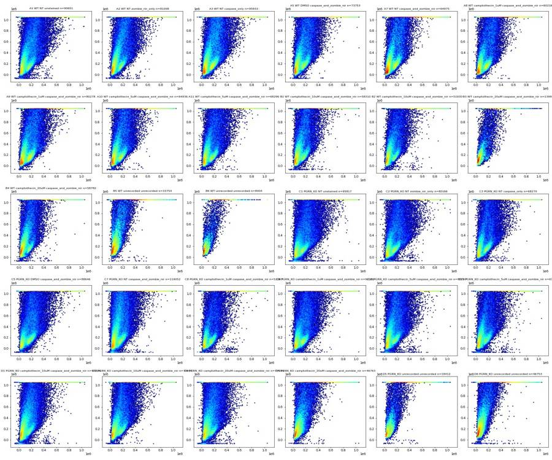
22
tool call · Bash
cd /task/work; cat > common.py <<'EOF'
import flowkit as fk, pandas as pd, numpy as np
lay=pd.read_csv('/task/inputs/plate_layout.csv')
wells=lay.well.tolist()
def load(w):
s=fk.Sample(f'/task/inputs/raw/Caspase_primaryneurons_caspase_Group_{w}.fcs')
d=s.get_events(source='raw')
return s, pd.DataFrame(d,columns=s.pnn_labels)
def title(w):
r=lay[lay.well==w].iloc[0]
return f"{w} {r.genotype} {r.treatment} {r.stain}"
# logicle-like for plotting
def lg(x, w=0.5, t=1048576, m=4.5):
return np.arcsinh(np.asarray(x)/150.)
EOF
cat > plots2.py <<'EOF'
from common import *
import matplotlib; matplotlib.use('Agg'); import matplotlib.pyplot as plt
fig,axs=plt.subplots(5,6,figsize=(24,20))
for ax,w in zip(axs.flat,wells):
s,d=load(w)
ax.hexbin(d['FSC-A']/1e3,np.log10(np.clip(d['SSC-A'],1000,None)),gridsize=120,bins='log',extent=(-70,1100,3,6.1),mincnt=1,cmap='jet')
ax.set_title(title(w)+f" n={s.event_count}",fontsize=9)
plt.tight_layout(); plt.savefig('fsc_ssclog.png',dpi=50)
EOF
python plots2.py23
tool output
(Bash completed with no output)
24
tool call · Read
{
"file_path": "/task/work/fsc_ssclog.png"
}25
tool output
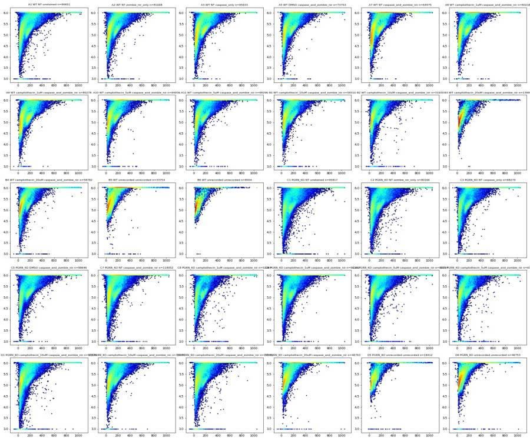
27
tool call · Bash
cd /task/work; cat > plots3.py <<'EOF'
from common import *
import matplotlib; matplotlib.use('Agg'); import matplotlib.pyplot as plt
ws=['A1','A7','B1','B3','C7','D4','B6','D5']
fig,axs=plt.subplots(2,4,figsize=(24,12))
for ax,w in zip(axs.flat,ws):
s,d=load(w)
ax.hexbin(np.log10(np.clip(d['FSC-A'],1e4,None)),np.log10(np.clip(d['SSC-A'],1000,None)),gridsize=150,bins='log',extent=(4.3,6.1,3,6.1),mincnt=1,cmap='jet')
ax.set_title(title(w)+f" n={s.event_count}",fontsize=11); ax.grid(alpha=.4)
plt.tight_layout(); plt.savefig('fsclog_ssclog.png',dpi=55)
EOF
python plots3.py28
tool output
(Bash completed with no output)
29
tool call · Read
{
"file_path": "/task/work/fsclog_ssclog.png"
}30
tool output
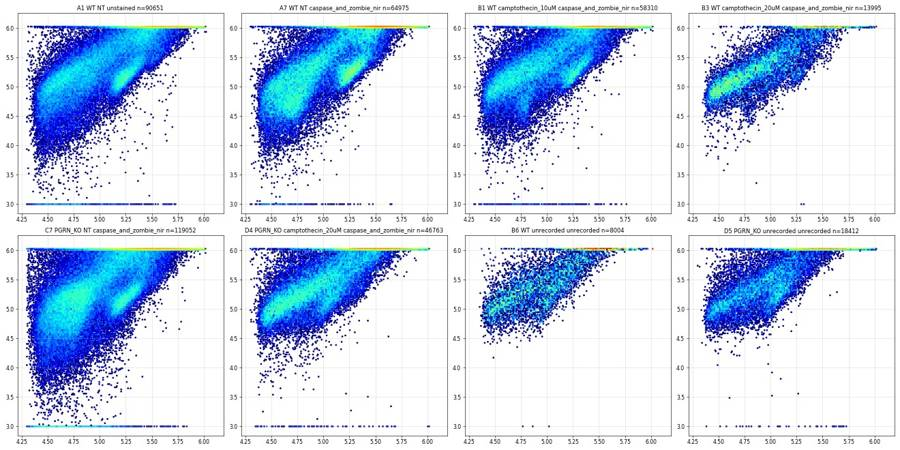
32
agent
Status: on log–log scatter I can see a distinct intact-cell cluster (FSC-A ≈ 160k, SSC-A ≈ 125k) separate from debris; plotting all 30 wells this way to place the Cells gate.
33
tool call · Bash
cd /task/work; cat > plots4.py <<'EOF'
from common import *
import matplotlib; matplotlib.use('Agg'); import matplotlib.pyplot as plt
fig,axs=plt.subplots(5,6,figsize=(24,20))
for ax,w in zip(axs.flat,wells):
s,d=load(w)
ax.hexbin(np.log10(np.clip(d['FSC-A'],1e4,None)),np.log10(np.clip(d['SSC-A'],1000,None)),gridsize=100,bins='log',extent=(4.3,6.1,3.5,6.1),mincnt=1,cmap='jet')
ax.set_title(title(w)+f" n={s.event_count}",fontsize=9); ax.grid(alpha=.4)
plt.tight_layout(); plt.savefig('all_loglog.png',dpi=50)
EOF
python plots4.py34
tool output
(Bash completed with no output)
35
tool call · Read
{
"file_path": "/task/work/all_loglog.png"
}36
tool output
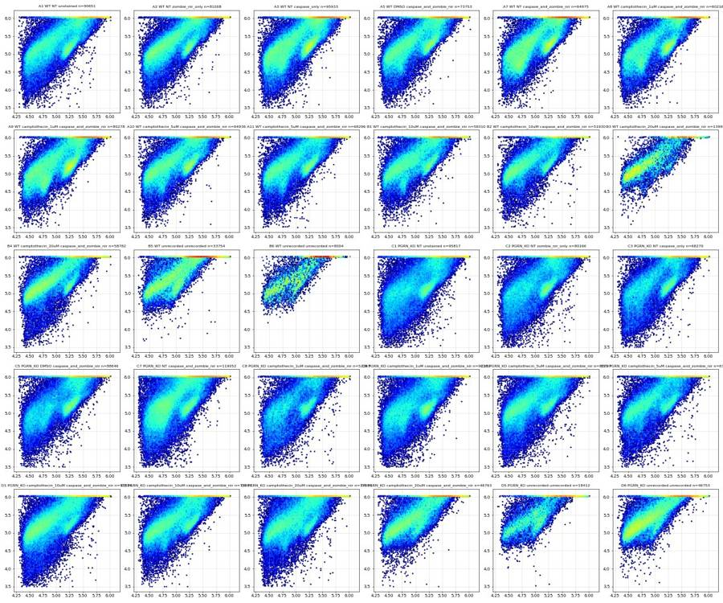
38
tool call · Bash
cd /task/work; cat > plots5.py <<'EOF'
from common import *
import matplotlib; matplotlib.use('Agg'); import matplotlib.pyplot as plt
import sys
xch=sys.argv[1]; ych=sys.argv[2]; out=sys.argv[3]
def tr(ch,x):
if ch in('BL1-A','RL3-A'): return np.arcsinh(x/200.)
return np.log10(np.clip(x,1e3,None))
ext={'BL1-A':(-3,9),'RL3-A':(-3,9),'SSC-A':(3.5,6.1),'FSC-A':(4.3,6.1)}
fig,axs=plt.subplots(5,6,figsize=(24,20))
for ax,w in zip(axs.flat,wells):
s,d=load(w)
ax.hexbin(tr(xch,d[xch]),tr(ych,d[ych]),gridsize=100,bins='log',extent=ext[xch]+ext[ych],mincnt=1,cmap='jet')
ax.set_title(title(w)+f" n={s.event_count}",fontsize=9); ax.grid(alpha=.4)
plt.tight_layout(); plt.savefig(out,dpi=50)
EOF
python plots5.py RL3-A SSC-A rl3_ssc.png; python plots5.py BL1-A SSC-A bl1_ssc.png39
tool output
(Bash completed with no output)
40
tool call · Read
{
"file_path": "/task/work/rl3_ssc.png"
}41
tool output
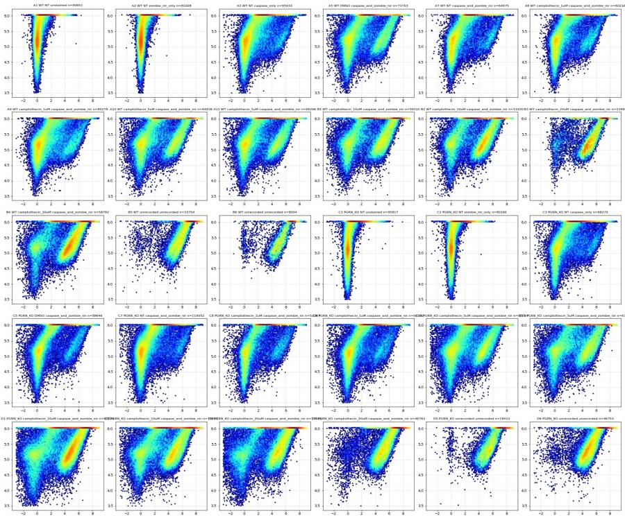
42
tool call · Read
{
"file_path": "/task/work/bl1_ssc.png"
}43
tool output
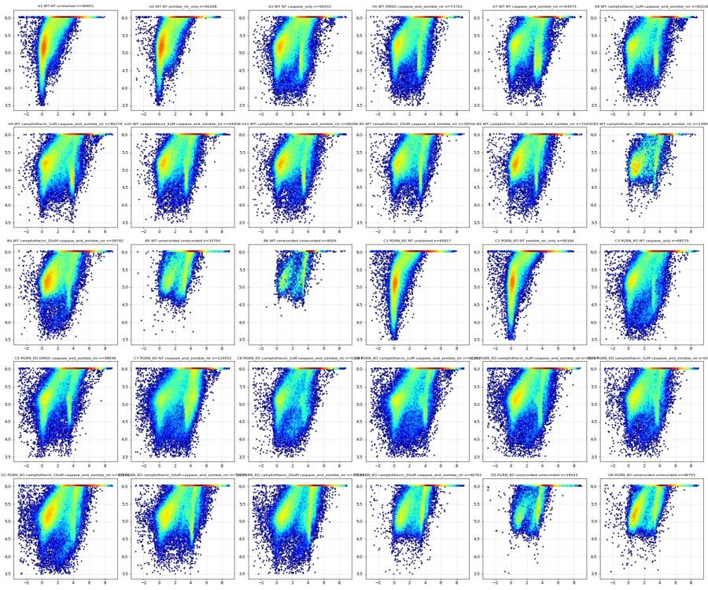
45
tool call · Bash
cd /task/work; cat > plots6.py <<'EOF'
from common import *
import matplotlib; matplotlib.use('Agg'); import matplotlib.pyplot as plt
fig,axs=plt.subplots(5,6,figsize=(26,18))
for ax,w in zip(axs.flat,wells):
s,d=load(w)
t=d['Time'].values
bins=np.arange(0,48.01,0.25)
h,_=np.histogram(t,bins=bins)
ax.plot(bins[:-1],h/0.25,'k-',lw=.8)
ax.set_ylim(0,None)
ax2=ax.twinx()
idx=np.digitize(t,bins)-1
for ch,c in [('FSC-A','b'),('SSC-A','g'),('BL1-A','orange'),('RL3-A','r')]:
x=d[ch].values
med=[np.median(x[idx==k]) if (idx==k).sum()>5 else np.nan for k in range(len(bins)-1)]
ax2.plot(bins[:-1],np.log10(np.clip(med,10,None)),c,lw=.8)
ax2.set_ylim(1,6.2)
ax.set_title(title(w)+f" n={s.event_count}",fontsize=9)
plt.tight_layout(); plt.savefig('time.png',dpi=50)
EOF
python plots6.py46
tool output
(Bash completed with no output)
47
tool call · Read
{
"file_path": "/task/work/time.png"
}48
tool output
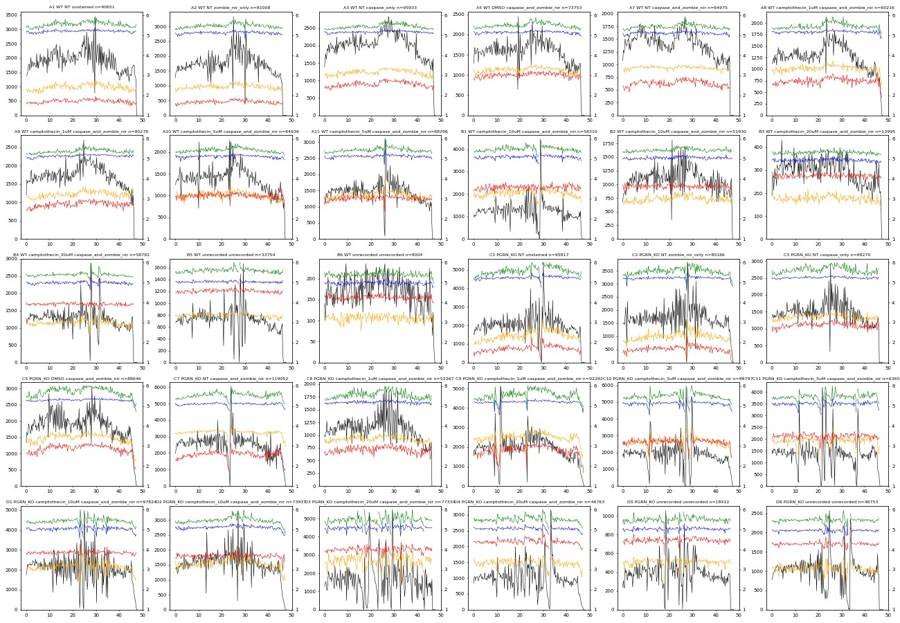
50
agent
Status: event-rate traces show short dips/bursts in many wells; quantifying gaps and low-rate periods per well to separate real clogs from normal flow noise.
51
tool call · Bash
cd /task/work; cat > gaps.py <<'EOF'
from common import *
for w in wells:
s,d=load(w); t=np.sort(d['Time'].values)
g=np.diff(t); top=np.sort(g)[-5:][::-1]
bins=np.arange(0,t.max(),0.25); h,_=np.histogram(t,bins=bins)
med=np.median(h[4:-4])
low=np.where(h<0.25*med)[0]; low=low[(low>=2)&(low<len(h)-2)]
hi=np.where(h>2*med)[0]
# expected max gap for poisson at rate r over N events ~ ln(N)/r
r=len(t)/t.max()
print(f"{w:4s} n={len(t):6d} rate={r:6.0f}/s medbin={med:5.0f} expMaxGap={np.log(len(t))/r*1000:5.1f}ms topgaps_ms={np.round(top*1000,0)} lowbins={len(low)} at {np.round(bins[low],2)[:12]} hibins={len(hi)} tend={t.max():.2f}")
EOF
python gaps.py52
tool output
A1 n= 90651 rate= 1909/s medbin= 477 expMaxGap= 6.0ms topgaps_ms=[88. 51. 46. 46. 38.] lowbins=0 at [] hibins=0 tend=47.48 A2 n= 81008 rate= 1751/s medbin= 431 expMaxGap= 6.5ms topgaps_ms=[81. 70. 68. 55. 47.] lowbins=1 at [30.] hibins=0 tend=46.25 A3 n= 95933 rate= 2037/s medbin= 512 expMaxGap= 5.6ms topgaps_ms=[23. 22. 18. 16. 15.] lowbins=0 at [] hibins=0 tend=47.10 A5 n= 73753 rate= 1593/s medbin= 402 expMaxGap= 7.0ms topgaps_ms=[73. 58. 55. 52. 45.] lowbins=0 at [] hibins=0 tend=46.30 A7 n= 64975 rate= 1405/s medbin= 360 expMaxGap= 7.9ms topgaps_ms=[16. 15. 14. 14. 13.] lowbins=0 at [] hibins=0 tend=46.24 A8 n= 60216 rate= 1274/s medbin= 324 expMaxGap= 8.6ms topgaps_ms=[31. 29. 27. 25. 24.] lowbins=0 at [] hibins=0 tend=47.27 A9 n= 80278 rate= 1730/s medbin= 434 expMaxGap= 6.5ms topgaps_ms=[45. 41. 32. 25. 25.] lowbins=0 at [] hibins=0 tend=46.41 A10 n= 64936 rate= 1375/s medbin= 352 expMaxGap= 8.1ms topgaps_ms=[108. 53. 45. 38. 33.] lowbins=0 at [] hibins=0 tend=47.21 A11 n= 68296 rate= 1473/s medbin= 371 expMaxGap= 7.6ms topgaps_ms=[182. 45. 40. 38. 36.] lowbins=2 at [25.75 26. ] hibins=2 tend=46.35 B1 n= 58310 rate= 1259/s medbin= 316 expMaxGap= 8.7ms topgaps_ms=[485. 114. 75. 69. 66.] lowbins=4 at [27. 27.75 28.25 28.5 ] hibins=2 tend=46.33 B2 n= 51930 rate= 1101/s medbin= 274 expMaxGap= 9.9ms topgaps_ms=[128. 93. 62. 61. 51.] lowbins=0 at [] hibins=0 tend=47.16 B3 n= 13995 rate= 296/s medbin= 76 expMaxGap= 32.2ms topgaps_ms=[72. 37. 31. 31. 30.] lowbins=0 at [] hibins=0 tend=47.22 B4 n= 58782 rate= 1273/s medbin= 319 expMaxGap= 8.6ms topgaps_ms=[249. 91. 74. 56. 51.] lowbins=1 at [27.5] hibins=1 tend=46.18 B5 n= 33754 rate= 729/s medbin= 184 expMaxGap= 14.3ms topgaps_ms=[317. 114. 73. 57. 45.] lowbins=2 at [25.25 27.5 ] hibins=2 tend=46.31 B6 n= 8004 rate= 169/s medbin= 43 expMaxGap= 53.2ms topgaps_ms=[101. 80. 68. 59. 56.] lowbins=0 at [] hibins=0 tend=47.38 C1 n= 95817 rate= 2071/s medbin= 505 expMaxGap= 5.5ms topgaps_ms=[243. 177. 124. 93. 70.] lowbins=2 at [29. 29.25] hibins=2 tend=46.27 C2 n= 80166 rate= 1692/s medbin= 418 expMaxGap= 6.7ms topgaps_ms=[257. 112. 98. 69. 68.] lowbins=1 at [27.5] hibins=1 tend=47.37 C3 n= 68270 rate= 1477/s medbin= 366 expMaxGap= 7.5ms topgaps_ms=[112. 73. 63. 60. 56.] lowbins=1 at [25.] hibins=0 tend=46.21 C5 n= 88646 rate= 1872/s medbin= 474 expMaxGap= 6.1ms topgaps_ms=[48. 44. 39. 37. 36.] lowbins=1 at [46.5] hibins=0 tend=47.36 C7 n=119052 rate= 2511/s medbin= 654 expMaxGap= 4.7ms topgaps_ms=[104. 86. 82. 79. 65.] lowbins=2 at [23.25 23.5 ] hibins=1 tend=47.42 C8 n= 52267 rate= 1131/s medbin= 283 expMaxGap= 9.6ms topgaps_ms=[77. 74. 71. 58. 57.] lowbins=0 at [] hibins=0 tend=46.21 C9 n= 92282 rate= 1948/s medbin= 501 expMaxGap= 5.9ms topgaps_ms=[140. 99. 86. 66. 62.] lowbins=5 at [ 9. 11. 11.25 23. 46.5 ] hibins=2 tend=47.37 C10 n= 88797 rate= 1883/s medbin= 474 expMaxGap= 6.1ms topgaps_ms=[334. 191. 172. 137. 125.] lowbins=7 at [11.5 26. 26.5 26.75 27. 29. 29.25] hibins=5 tend=47.17 C11 n= 63651 rate= 1371/s medbin= 345 expMaxGap= 8.1ms topgaps_ms=[359. 258. 121. 89. 86.] lowbins=10 at [11.25 11.5 21. 21.25 21.5 22.75 25.75 27. 36.25 36.5 ] hibins=5 tend=46.43 D1 n= 97824 rate= 2063/s medbin= 535 expMaxGap= 5.6ms topgaps_ms=[258. 135. 116. 101. 98.] lowbins=4 at [23. 24.5 24.75 30.25] hibins=1 tend=47.42 D2 n= 73937 rate= 1564/s medbin= 389 expMaxGap= 7.2ms topgaps_ms=[119. 70. 62. 61. 53.] lowbins=3 at [26.75 46.25 46.5 ] hibins=1 tend=47.29 D3 n= 77334 rate= 1666/s medbin= 414 expMaxGap= 6.8ms topgaps_ms=[289. 229. 220. 198. 197.] lowbins=13 at [14. 16.75 17. 18. 18.25 18.5 23. 25.5 28.5 28.75 32.75 37.75] hibins=9 tend=46.43 D4 n= 46763 rate= 991/s medbin= 248 expMaxGap= 10.9ms topgaps_ms=[297. 97. 76. 74. 47.] lowbins=4 at [27.5 32.5 32.75 46.25] hibins=6 tend=47.20 D5 n= 18412 rate= 397/s medbin= 96 expMaxGap= 24.7ms topgaps_ms=[310. 271. 162. 145. 120.] lowbins=5 at [18. 18.25 24.25 25.75 27.5 ] hibins=3 tend=46.37 D6 n= 46753 rate= 1011/s medbin= 262 expMaxGap= 10.6ms topgaps_ms=[357. 285. 251. 88. 81.] lowbins=6 at [32.25 32.5 32.75 33. 33.25 33.5 ] hibins=4 tend=46.24
54
tool call · Bash
cd /task/work; python plots5.py BL1-A RL3-A bl1_rl3.png
55
tool output
(Bash completed with no output)
56
tool call · Read
{
"file_path": "/task/work/bl1_rl3.png"
}57
tool output
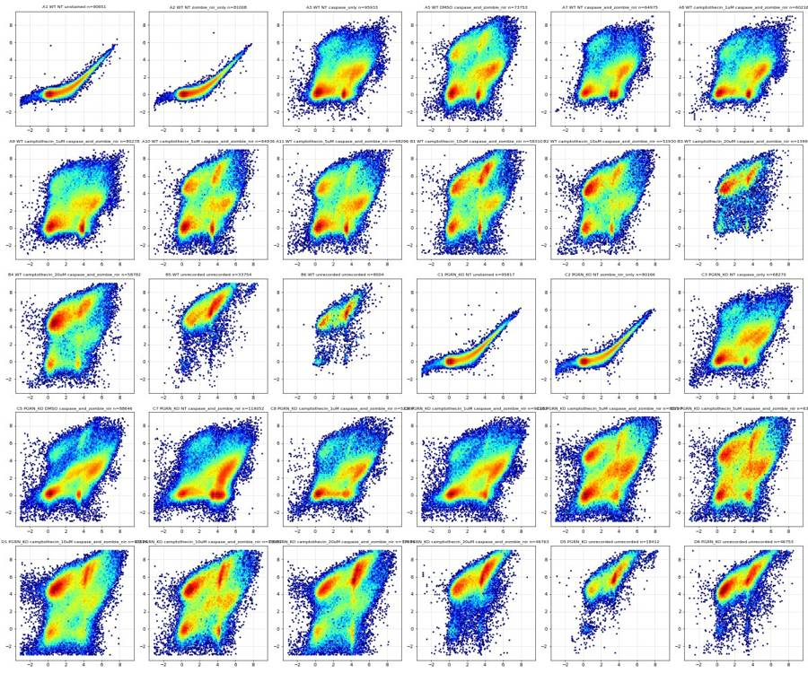
59
thinking
The Zombie NIR-only controls (A2, C2) show no Zombie signal, while the caspase-only controls (A3, C3) contain a Zombie-bright population. I'm now checking where live and dead events sit on scatter to place the Cells gate.
60
tool call · Bash
cd /task/work; cat > plots7.py <<'EOF'
from common import *
import matplotlib; matplotlib.use('Agg'); import matplotlib.pyplot as plt
ws=['A7','C7','A5','B1','D3','A3']
fig,axs=plt.subplots(3,6,figsize=(30,15))
for j,w in enumerate(ws):
s,d=load(w)
r=np.arcsinh(d['RL3-A']/200); b=np.arcsinh(d['BL1-A']/200)
lf=np.log10(np.clip(d['FSC-A'],1e4,None)); ls=np.log10(np.clip(d['SSC-A'],1e3,None))
for i,(m,lab) in enumerate([(r<2,'RL3neg'),(r>=3.5,'RL3pos'),((r<2)&(b>3),'RL3neg BL1>3')]):
ax=axs[i,j]
ax.hexbin(lf[m],ls[m],gridsize=100,bins='log',extent=(4.3,6.1,3.5,6.1),mincnt=1,cmap='jet')
ax.set_title(f'{title(w)} {lab} n={m.sum()}',fontsize=10); ax.grid(alpha=.4)
plt.tight_layout(); plt.savefig('scatter_by_rl3.png',dpi=45)
EOF
python plots7.py61
tool output
(Bash completed with no output)
62
tool call · Read
{
"file_path": "/task/work/scatter_by_rl3.png"
}63
tool output
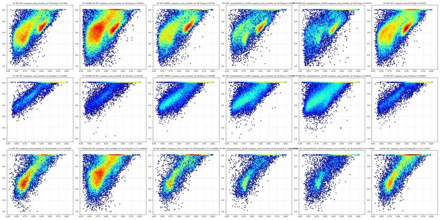
65
tool call · Bash
cd /task/work; python -c " import flowkit as fk, inspect print(fk.__version__) print(inspect.signature(fk.Dimension.__init__)) print(inspect.signature(fk.gates.PolygonGate.__init__)) print(inspect.signature(fk.gates.RectangleGate.__init__)) print(inspect.signature(fk.gates.EllipsoidGate.__init__)) print(inspect.signature(fk.transforms.LogicleTransform.__init__)) print(inspect.signature(fk.GatingStrategy.add_gate)) print(inspect.signature(fk.GatingStrategy.add_transform)) print([x for x in dir(fk.transforms) if 'Trans' in x]) "
66
tool output
1.2.3 (self, dimension_id, compensation_ref='uncompensated', transformation_ref=None, range_min=None, range_max=None) (self, gate_name, dimensions, vertices, use_complement=False) (self, gate_name, dimensions, use_complement=False) (self, gate_name, dimensions, coordinates, covariance_matrix, distance_square) (self, param_t, param_w, param_m, param_a) (self, gate, gate_path, sample_id=None) (self, transform_id, transform) ['AsinhTransform', 'HyperlogTransform', 'LinearTransform', 'LogTransform', 'LogicleTransform', 'RatioTransform', 'WSPBiexTransform', 'WSPLogTransform']
68
tool call · Bash
cd /task/work; python -c " import flowkit as fk, numpy as np for w in [0.5,1.0,1.5]: t=fk.transforms.LogicleTransform(param_t=1048576, param_w=w, param_m=6.0, param_a=0) x=np.array([-5000,-1000,-100,0,100,300,1000,3300,10000,30000,1e5,3e5,1e6,1048575.]) print(w, np.round(t.apply(x),3)) "
69
tool output
0.5 [-0.446 -0.329 -0.156 0.083 0.322 0.407 0.496 0.583 0.663 0.743 0.83 0.909 0.997 1. ] 1.0 [-0.278 -0.155 0.05 0.167 0.283 0.386 0.488 0.58 0.662 0.742 0.83 0.909 0.997 1. ] 1.5 [-0.101 0.054 0.223 0.25 0.277 0.328 0.446 0.565 0.657 0.74 0.829 0.909 0.997 1. ]
71
tool call · Bash
cd /task/work; cat >> common.py <<'EOF'
TS=fk.transforms.LogicleTransform(param_t=1048576, param_w=0.5, param_m=6.0, param_a=0)
TF=fk.transforms.LogicleTransform(param_t=1048576, param_w=1.0, param_m=6.0, param_a=0)
def T(ch,x):
x=np.asarray(x,dtype=float)
return TF.apply(x) if ch in ('BL1-A','RL3-A') else TS.apply(x)
EXT={'BL1-A':(-0.2,1.01),'RL3-A':(-0.2,1.01),'SSC-A':(0.4,1.01),'FSC-A':(0.7,1.01),'SSC-H':(0.4,1.01),'FSC-H':(0.7,1.01)}
EOF
cat > plotx.py <<'EOF'
from common import *
import matplotlib; matplotlib.use('Agg'); import matplotlib.pyplot as plt, sys
xch,ych,out=sys.argv[1:4]; ws=sys.argv[4].split(',') if len(sys.argv)>4 else wells
nc=6 if len(ws)>8 else len(ws)
nr=int(np.ceil(len(ws)/nc))
fig,axs=plt.subplots(nr,nc,figsize=(4*nc,4*nr),squeeze=False)
for ax,w in zip(axs.flat,ws):
s,d=load(w)
ax.hexbin(T(xch,d[xch]),T(ych,d[ych]),gridsize=110,bins='log',extent=EXT[xch]+EXT[ych],mincnt=1,cmap='jet')
ax.set_title(title(w)+f" n={s.event_count}",fontsize=8); ax.grid(alpha=.4); ax.set_xlabel(xch); ax.set_ylabel(ych)
plt.tight_layout(); plt.savefig(out,dpi=55)
EOF
python plotx.py SSC-A SSC-H singlet.png A1,A7,C7,B1,D3,B6,D5,C572
tool output
(Bash completed with no output)
73
tool call · Read
{
"file_path": "/task/work/singlet.png"
}74
tool output
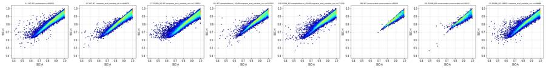
76
agent
Status: building a provisional Cells gate on logicle-scaled FSC-A/SSC-A and overlaying it on all wells.
77
tool call · Bash
cd /task/work; python -c "
from common import *
for v in [20000,30000,40000,50000,60000,8e5,8.5e5,9e5,9.5e5,1e6]:
print(v, round(float(TS.apply(np.array([v]))[0]),4))
print('inv', [ (x, round(float(TS.inverse(np.array([x]))[0]))) for x in [0.75,0.76,0.77,0.78,0.6,0.65,0.68,0.7,0.98,0.985,0.99,0.995]])
"78
tool output
20000 0.7134 30000 0.7427 40000 0.7636 50000 0.7797 60000 0.7929 800000.0 0.9804 850000.0 0.9848 900000.0 0.9889 950000.0 0.9929 1000000.0 0.9966 inv [(0.75, 33172), (0.76, 38085), (0.77, 43725), (0.78, 50201), (0.6, 4188), (0.65, 8342), (0.68, 12620), (0.7, 16632), (0.98, 795430), (0.985, 852317), (0.99, 913273), (0.995, 978589)]
79
tool call · Bash
cd /task/work; cat > ov.py <<'EOF'
from common import *
import matplotlib; matplotlib.use('Agg'); import matplotlib.pyplot as plt, sys, json
from matplotlib.path import Path
CELLS=[(0.765,0.70),(0.83,0.70),(0.97,0.92),(0.985,0.975),(0.985,0.985),(0.86,0.985),(0.765,0.86)]
def plot(xch,ych,out,ws,poly=None,pre=None,rect=None):
nc=6 if len(ws)>8 else len(ws); nr=int(np.ceil(len(ws)/nc))
fig,axs=plt.subplots(nr,nc,figsize=(4*nc,4*nr),squeeze=False)
for ax,w in zip(axs.flat,ws):
s,d=load(w)
if pre is not None: d=d[pre(d)]
ax.hexbin(T(xch,d[xch]),T(ych,d[ych]),gridsize=110,bins='log',extent=EXT[xch]+EXT[ych],mincnt=1,cmap='jet')
if poly: P=np.array(poly+[poly[0]]); ax.plot(P[:,0],P[:,1],'k-',lw=1.2)
if rect: (x0,x1),(y0,y1)=rect; ax.plot([x0,x1,x1,x0,x0],[y0,y0,y1,y1,y0],'k-',lw=1.2)
ax.set_title(title(w)+f" n={len(d)}",fontsize=8); ax.grid(alpha=.4)
plt.tight_layout(); plt.savefig(out,dpi=50)
def inpoly(d,poly,xch,ych):
return Path(poly).contains_points(np.c_[T(xch,d[xch]),T(ych,d[ych])])
if __name__=='__main__':
plot('FSC-A','SSC-A','ov_cells.png',wells,CELLS)
EOF
python ov.py80
tool output
(Bash completed with no output)
81
tool call · Read
{
"file_path": "/task/work/ov_cells.png"
}82
tool output
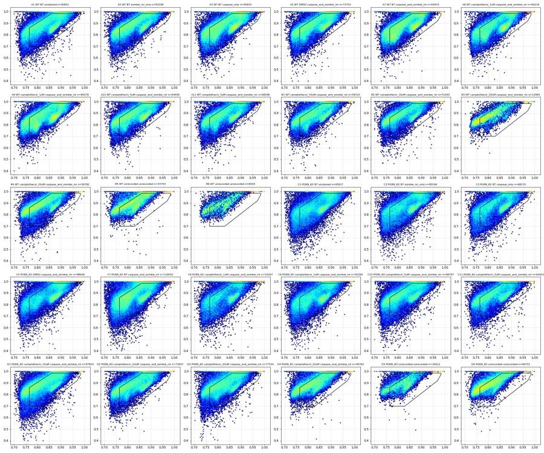
84
tool call · Bash
cd /task/work; cat > hist.py <<'EOF'
from common import *
import matplotlib; matplotlib.use('Agg'); import matplotlib.pyplot as plt
ws=['A1','A2','A7','C7','A5','B1','D3','B3','D4','B6']
fig,axs=plt.subplots(2,5,figsize=(25,9))
for ax,w in zip(axs.flat,ws):
s,d=load(w)
r=TF.apply(d['RL3-A'].values); b=TF.apply(d['BL1-A'].values)
f=T('FSC-A',d['FSC-A']); ss=T('SSC-A',d['SSC-A'])
m=ss<0.985
bins=np.linspace(0.72,1.0,120)
ax.hist(f[m],bins,histtype='step',label='all (SSC<sat)')
ax.hist(f[m&(r<0.45)],bins,histtype='step',label='RL3 neg')
ax.hist(f[m&(r<0.45)&(b>0.55)],bins,histtype='step',label='RL3neg BL1+')
ax.hist(f[m&(r>0.6)],bins,histtype='step',label='RL3 pos')
ax.set_title(title(w)); ax.legend(fontsize=7)
plt.tight_layout(); plt.savefig('fsc_hist.png',dpi=50)
EOF
python hist.py85
tool output
(Bash completed with no output)
86
tool call · Read
{
"file_path": "/task/work/fsc_hist.png"
}87
tool output
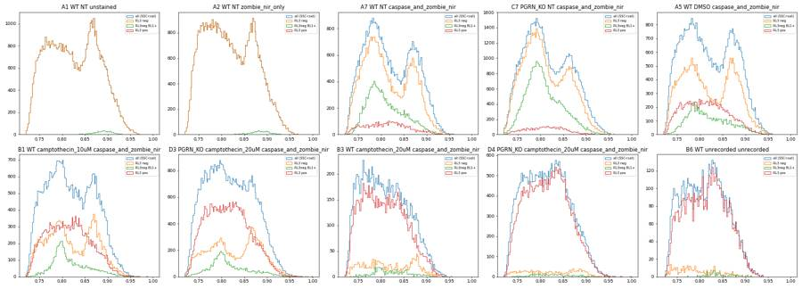
89
tool call · Bash
cd /task/work; cat > ov2.py <<'EOF'
from ov import *
def ell(cx,cy,a,b,ang,n=24):
th=np.linspace(0,2*np.pi,n,endpoint=False); c,s_=np.cos(np.radians(ang)),np.sin(np.radians(ang))
x=a*np.cos(th); y=b*np.sin(th)
return [(round(cx+c*xx-s_*yy,4),round(cy+s_*xx+c*yy,4)) for xx,yy in zip(x,y)]
E=ell(0.858,0.845,0.115,0.075,50)
E=[(x,min(y,0.982)) for x,y in E]
print(E)
ws=['A1','A2','A3','A7','C7','A5','B1','B4','D3','B3','D4','B6']
plot('FSC-A','SSC-A','ov_cells_rl3neg.png',ws,E,pre=lambda d: TF.apply(d['RL3-A'].values)<0.45)
plot('FSC-A','SSC-A','ov_cells_all.png',wells,E)
EOF
python ov2.py90
tool output
[(0.9319, 0.9331), (0.9145, 0.9426), (0.8933, 0.9454), (0.8696, 0.9414), (0.8452, 0.9308), (0.8216, 0.9144), (0.8005, 0.8932), (0.7834, 0.8688), (0.7713, 0.8427), (0.7651, 0.8168), (0.7653, 0.7928), (0.7717, 0.7724), (0.7841, 0.7569), (0.8015, 0.7474), (0.8227, 0.7446), (0.8464, 0.7486), (0.8708, 0.7592), (0.8944, 0.7756), (0.9155, 0.7968), (0.9326, 0.8212), (0.9447, 0.8473), (0.9509, 0.8732), (0.9507, 0.8972), (0.9443, 0.9176)]
91
tool call · Read
{
"file_path": "/task/work/ov_cells_rl3neg.png"
}92
tool output
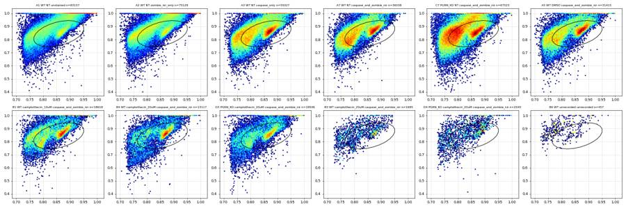
94
thinking
Cell gate is set on logicle FSC-A/SSC-A, covering both the intact and caspase⁺ clusters; placing the singlet gate next.
95
tool call · Bash
cd /task/work; cat > gates_def.py <<'EOF'
import numpy as np
def ell(cx,cy,a,b,ang,n=24):
th=np.linspace(0,2*np.pi,n,endpoint=False); c,s_=np.cos(np.radians(ang)),np.sin(np.radians(ang))
x=a*np.cos(th); y=b*np.sin(th)
return [(round(float(cx+c*xx-s_*yy),4),round(float(cy+s_*xx+c*yy),4)) for xx,yy in zip(x,y)]
CELLS=ell(0.858,0.845,0.115,0.075,50)
EOF
cat > ov3.py <<'EOF'
from ov import *
from gates_def import *
import matplotlib.pyplot as plt
ws=['A1','A2','A3','A7','C7','A5','B1','B4','D3','B3','D4','B6']
def pre(d): return inpoly(d,CELLS,'FSC-A','SSC-A')
fig,axs=plt.subplots(2,12,figsize=(48,8))
for j,w in enumerate(ws):
s,d=load(w); d=d[pre(d)]
a=d['SSC-A'].values; h=d['SSC-H'].values
axs[0,j].hexbin(a/1e3,h/1e3,gridsize=100,bins='log',extent=(0,500,0,500),mincnt=1,cmap='jet'); axs[0,j].plot([0,500],[0,500],'k:')
axs[0,j].set_title(title(w)+f' cells n={len(d)}',fontsize=9)
axs[1,j].hexbin(T('SSC-A',a),h/a,gridsize=100,bins='log',extent=(0.74,0.96,0.4,1.6),mincnt=1,cmap='jet'); axs[1,j].set_ylabel('H/A')
plt.tight_layout(); plt.savefig('singlet2.png',dpi=40)
EOF
python ov3.py96
tool output
(Bash completed with no output)
97
tool call · Read
{
"file_path": "/task/work/singlet2.png"
}98
tool output
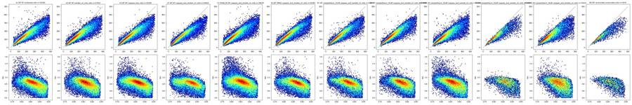
100
tool call · Bash
cd /task/work; cat > ov4.py <<'EOF'
from ov import *
from gates_def import *
import matplotlib.pyplot as plt
ws=['A1','A7','C7','D3']
fig,axs=plt.subplots(2,4,figsize=(20,10))
for j,w in enumerate(ws):
s,d=load(w); d=d[inpoly(d,CELLS,'FSC-A','SSC-A')]
a=d['SSC-A'].values; h=d['SSC-H'].values; fw=d['SSC-W'].values
axs[0,j].hexbin(a/1e3,h/a,gridsize=100,bins='log',extent=(0,500,0.3,1.5),mincnt=1,cmap='jet')
for q in [0.55,0.6,0.65]: axs[0,j].axhline(q,color='k',lw=.5)
axs[0,j].set_title(title(w))
axs[1,j].hist(h/a,bins=np.linspace(0.3,1.6,150),log=True)
print(w, 'frac H/A<0.6', np.mean(h/a<0.6).round(4), '<0.65',np.mean(h/a<0.65).round(4),'>1.2',np.mean(h/a>1.2).round(4))
plt.tight_layout(); plt.savefig('singlet3.png',dpi=50)
EOF
python ov4.py101
tool output
A1 frac H/A<0.6 0.0949 <0.65 0.1462 >1.2 0.0139 A7 frac H/A<0.6 0.0695 <0.65 0.108 >1.2 0.0057 C7 frac H/A<0.6 0.074 <0.65 0.1112 >1.2 0.0256 D3 frac H/A<0.6 0.1117 <0.65 0.165 >1.2 0.0192
102
tool call · Read
{
"file_path": "/task/work/singlet3.png"
}103
tool output
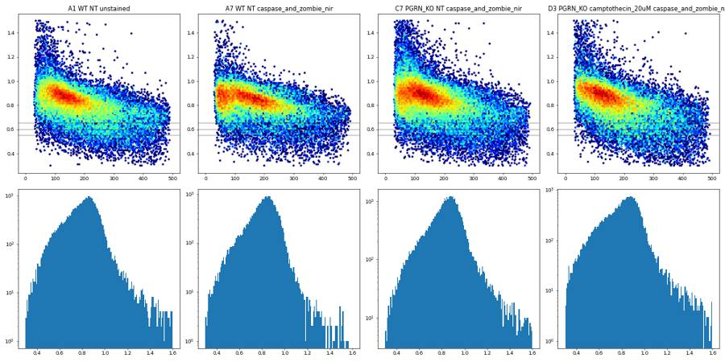
105
tool call · Bash
cd /task/work; cat >> gates_def.py <<'EOF'
SING=[(20000,13600),(550000,330000),(550000,560000),(20000,25000)]
EOF
cat > ov5.py <<'EOF'
from ov import *
from gates_def import *
from matplotlib.path import Path
def single(d):
m=inpoly(d,CELLS,'FSC-A','SSC-A')
m&=Path(SING).contains_points(np.c_[d['SSC-A'],d['SSC-H']])
return m
if __name__=='__main__':
plot('RL3-A','SSC-A','ov_live.png',wells,pre=single)
plot('BL1-A','SSC-A','ov_bl1_sing.png',wells,pre=single)
EOF
python ov5.py106
tool output
(Bash completed with no output)
107
tool call · Read
{
"file_path": "/task/work/ov_live.png"
}108
tool output
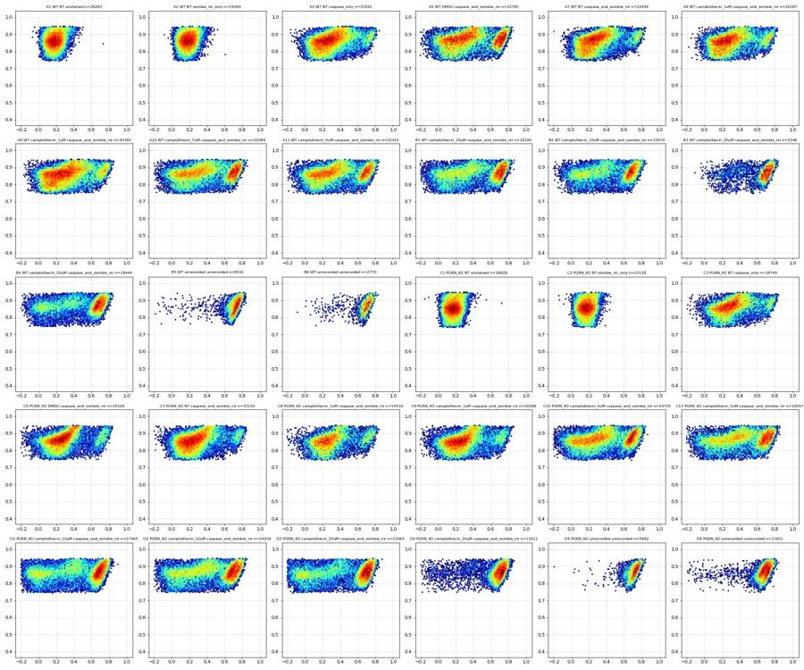
110
tool call · Read
{
"file_path": "/task/work/ov_bl1_sing.png"
}111
tool output
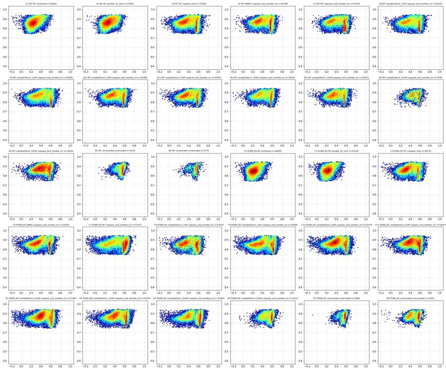
113
agent
Status: Cells and singlet gates drafted; now locating the RL3-A (Zombie) live/dead valley and the BL1-A (CellEvent) positive boundary from histograms.
114
tool call · Bash
cd /task/work; cat > hist2.py <<'EOF'
from ov5 import *
import matplotlib.pyplot as plt
ws=['A1','C1','A2','C2','A3','C3','A5','A7','C5','C7','B1','D1','B4','D3','B3']
fig,axs=plt.subplots(2,1,figsize=(16,12))
bins=np.linspace(-0.2,1.0,241)
for w in ws:
s,d=load(w); d=d[single(d)]
r=TF.apply(d['RL3-A'].values); b=TF.apply(d['BL1-A'].values)
h,_=np.histogram(r,bins); axs[0].plot(bins[:-1],h/h.sum(),label=w,lw=1.5 if w in('A1','C1','A3','C3') else .8)
m=r<0.55
h,_=np.histogram(b[m],bins); axs[1].plot(bins[:-1],h/h.sum(),label=w,lw=1.5 if w in('A1','C1','A2','C2') else .8)
for ax in axs: ax.legend(ncol=3); ax.grid(alpha=.4); ax.set_xticks(np.arange(-0.2,1.01,0.05))
axs[0].set_title('RL3-A logicle, Single_Cells'); axs[1].set_title('BL1-A logicle, Single_Cells & RL3<0.55')
plt.tight_layout(); plt.savefig('hist_fl.png',dpi=60)
for v in [0.45,0.5,0.52,0.55,0.57,0.6,0.62,0.65,0.95,1.0]: print(v, round(float(TF.inverse(np.array([v]))[0])))
EOF
python hist2.py115
tool output
0.45 626 0.5 1160 0.52 1497 0.55 2212 0.57 2881 0.6 4302 0.62 5633 0.65 8463 0.95 525611 1.0 1048576
116
tool call · Read
{
"file_path": "/task/work/hist_fl.png"
}117
tool output
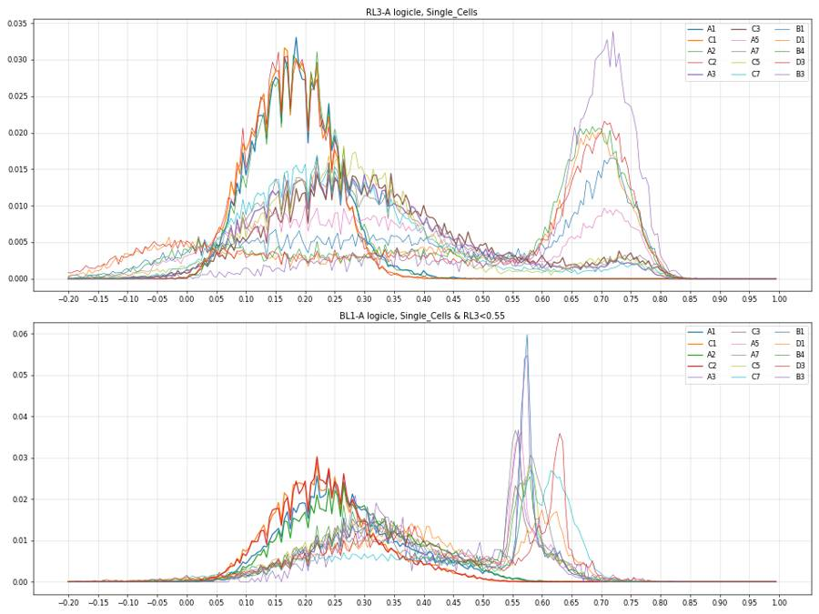
119
tool call · Bash
cd /task/work; cat > thr.py <<'EOF'
from ov5 import *
pool=[]
res={}
for w in wells:
s,d=load(w); d=d[single(d)]
r=TF.apply(d['RL3-A'].values); b=TF.apply(d['BL1-A'].values); ss=T('SSC-A',d['SSC-A'])
res[w]=(r,b,ss)
# RL3 valley in stained wells
bins=np.linspace(0.40,0.70,61)
H=0
for w in wells:
if w in ('A1','C1','A2','C2'): continue
h,_=np.histogram(res[w][0],bins); H=H+h/len(res[w][0])
print('pooled RL3 hist 0.40-0.70 step .005:'); print(np.round(bins[:-1],3)[np.argsort(H)[:6]], 'min bins')
for x,y in zip(bins[:-1],H): print(f'{x:.3f} {y*1000:.2f}', end=' | ')
print()
for thr in [0.45,0.47,0.5,0.52,0.55]:
print('RL3 thr',thr,'frac of unstained singlets above:', {w: round(np.mean(res[w][0]>thr)*100,2) for w in ['A1','C1','A2','C2']})
for thr in [0.48,0.50,0.52,0.53,0.54,0.55]:
print('BL1 thr',thr,'% of live(<0.56) above:', {w: round(np.mean(res[w][1][res[w][0]<0.56]>thr)*100,2) for w in ['A1','C1','A2','C2','A3','C3','A7','C7','B1','D3']})
EOF
python thr.py120
tool output
pooled RL3 hist 0.40-0.70 step .005:
[0.535 0.54 0.525 0.52 0.545 0.56 ] min bins
0.400 133.69 | 0.405 119.42 | 0.410 119.79 | 0.415 119.48 | 0.420 109.19 | 0.425 108.84 | 0.430 103.64 | 0.435 101.75 | 0.440 102.42 | 0.445 95.26 | 0.450 91.54 | 0.455 88.93 | 0.460 87.76 | 0.465 86.63 | 0.470 80.29 | 0.475 80.52 | 0.480 78.80 | 0.485 77.59 | 0.490 68.64 | 0.495 71.50 | 0.500 66.35 | 0.505 67.93 | 0.510 65.87 | 0.515 62.26 | 0.520 61.00 | 0.525 60.63 | 0.530 63.94 | 0.535 59.41 | 0.540 60.22 | 0.545 61.09 | 0.550 64.09 | 0.555 62.78 | 0.560 61.82 | 0.565 63.28 | 0.570 66.08 | 0.575 71.33 | 0.580 70.13 | 0.585 71.42 | 0.590 75.01 | 0.595 82.30 | 0.600 91.23 | 0.605 94.86 | 0.610 105.49 | 0.615 117.92 | 0.620 132.39 | 0.625 145.38 | 0.630 160.69 | 0.635 178.86 | 0.640 207.06 | 0.645 223.59 | 0.650 241.64 | 0.655 269.37 | 0.660 277.17 | 0.665 300.15 | 0.670 316.95 | 0.675 340.49 | 0.680 340.12 | 0.685 361.02 | 0.690 360.55 | 0.695 384.59 |
RL3 thr 0.45 frac of unstained singlets above: {'A1': 0.07, 'C1': 0.02, 'A2': 0.04, 'C2': 0.0}
RL3 thr 0.47 frac of unstained singlets above: {'A1': 0.02, 'C1': 0.01, 'A2': 0.02, 'C2': 0.0}
RL3 thr 0.5 frac of unstained singlets above: {'A1': 0.01, 'C1': 0.01, 'A2': 0.01, 'C2': 0.0}
RL3 thr 0.52 frac of unstained singlets above: {'A1': 0.0, 'C1': 0.01, 'A2': 0.01, 'C2': 0.0}
RL3 thr 0.55 frac of unstained singlets above: {'A1': 0.0, 'C1': 0.0, 'A2': 0.0, 'C2': 0.0}
BL1 thr 0.48 % of live(<0.56) above: {'A1': 3.64, 'C1': 0.83, 'A2': 4.04, 'C2': 0.9, 'A3': 36.34, 'C3': 30.83, 'A7': 50.67, 'C7': 56.55, 'B1': 39.79, 'D3': 39.52}
BL1 thr 0.5 % of live(<0.56) above: {'A1': 2.31, 'C1': 0.39, 'A2': 2.26, 'C2': 0.43, 'A3': 34.2, 'C3': 28.8, 'A7': 48.73, 'C7': 54.84, 'B1': 37.99, 'D3': 37.7}
BL1 thr 0.52 % of live(<0.56) above: {'A1': 1.35, 'C1': 0.19, 'A2': 1.25, 'C2': 0.18, 'A3': 32.13, 'C3': 26.57, 'A7': 47.09, 'C7': 53.23, 'B1': 36.58, 'D3': 36.24}
BL1 thr 0.53 % of live(<0.56) above: {'A1': 1.01, 'C1': 0.12, 'A2': 0.87, 'C2': 0.12, 'A3': 31.17, 'C3': 25.5, 'A7': 46.19, 'C7': 52.69, 'B1': 35.78, 'D3': 35.55}
BL1 thr 0.54 % of live(<0.56) above: {'A1': 0.73, 'C1': 0.06, 'A2': 0.62, 'C2': 0.08, 'A3': 29.98, 'C3': 24.37, 'A7': 44.95, 'C7': 51.96, 'B1': 35.13, 'D3': 34.95}
BL1 thr 0.55 % of live(<0.56) above: {'A1': 0.54, 'C1': 0.05, 'A2': 0.42, 'C2': 0.05, 'A3': 26.22, 'C3': 22.11, 'A7': 40.68, 'C7': 51.02, 'B1': 34.29, 'D3': 34.26}122
thinking
Live gating is set at RL3-A logicle < 0.54 and Caspase_pos at BL1-A logicle ≥ 0.53; I'm building the FlowKit strategy and exporting it now.
123
tool call · Bash
cd /task/work; python -c " from common import * print([ (v, round(float(TF.inverse(np.array([v]))[0]))) for v in [-0.3,-0.25,0.53,0.54]]) print([ (v, round(float(TS.inverse(np.array([v]))[0]))) for v in [0.70,0.97]]) "
124
tool output
[(-0.3, -6748), (-0.25, -3441), (0.53, 1704), (0.54, 1941)] [(0.7, 16632), (0.97, 692792)]
125
tool call · Bash
cd /task/work; cat > build.py <<'EOF'
import flowkit as fk, numpy as np, pandas as pd, sys
sys.path.insert(0,'/task/work')
from gates_def import CELLS, SING
RL3_MAX=0.54; BL1_MIN=0.53; RL3_MIN=-0.30
SSC_LO=0.70; SSC_HI=0.97
g=fk.GatingStrategy()
g.add_transform('logicle_scatter', fk.transforms.LogicleTransform(param_t=1048576, param_w=0.5, param_m=6.0, param_a=0))
g.add_transform('logicle_fluor', fk.transforms.LogicleTransform(param_t=1048576, param_w=1.0, param_m=6.0, param_a=0))
D=fk.Dimension
cells=fk.gates.PolygonGate('Cells',[D('FSC-A','uncompensated','logicle_scatter'),D('SSC-A','uncompensated','logicle_scatter')],[list(v) for v in CELLS])
g.add_gate(cells, gate_path=('root',))
sing=fk.gates.PolygonGate('Single_Cells',[D('SSC-A','uncompensated',None),D('SSC-H','uncompensated',None)],[list(map(float,v)) for v in SING])
g.add_gate(sing, gate_path=('root','Cells'))
live=fk.gates.RectangleGate('Live',[D('RL3-A','uncompensated','logicle_fluor',range_min=RL3_MIN,range_max=RL3_MAX),
D('SSC-A','uncompensated','logicle_scatter',range_min=SSC_LO,range_max=SSC_HI)])
g.add_gate(live, gate_path=('root','Cells','Single_Cells'))
casp=fk.gates.RectangleGate('Caspase_pos',[D('BL1-A','uncompensated','logicle_fluor',range_min=BL1_MIN,range_max=None),
D('SSC-A','uncompensated','logicle_scatter',range_min=SSC_LO,range_max=SSC_HI)])
g.add_gate(casp, gate_path=('root','Cells','Single_Cells','Live'))
with open('/task/outputs/gates.xml','wb') as fh: fk.export_gatingml(g, fh)
g2=fk.parse_gating_xml('/task/outputs/gates.xml')
print(g2.get_gate_hierarchy())
# gate all
lay=pd.read_csv('/task/inputs/plate_layout.csv')
rows=[]
order=['Cells','Single_Cells','Live','Caspase_pos']; parent={'Cells':'all_events','Single_Cells':'Cells','Live':'Single_Cells','Caspase_pos':'Live'}
for f,w in zip(lay.file,lay.well):
s=fk.Sample('/task/inputs/raw/'+f)
r=g2.gate_sample(s)
rep=r.report
cnt={p:int(rep.loc[rep.gate_name==p,'count'].iloc[0]) for p in order}
cnt['all_events']=s.event_count
for p in order:
pc=cnt[parent[p]]
rows.append(dict(file=f,well=w,population=p,count=cnt[p],parent_population=parent[p],pct_of_parent=round(cnt[p]/pc*100,4) if pc>0 else 0.0))
df=pd.DataFrame(rows); df.to_csv('/task/outputs/counts.csv',index=False)
pv=df.pivot(index='well',columns='population',values='count')[order]
pp=df.pivot(index='well',columns='population',values='pct_of_parent')[order]
pd.set_option('display.width',200)
print(pd.concat([pv,pp.round(1).add_suffix('_%')],axis=1).loc[lay.well])
EOF
python build.py126
tool output
root
╰── Cells
╰── Single_Cells
╰── Live
╰── Caspase_pos
population Cells Single_Cells Live ... Single_Cells_% Live_% Caspase_pos_%
well ...
A1 30180 26263 26262 ... 87.0 100.0 1.0
A2 27623 24264 24263 ... 87.8 100.0 0.9
A3 35295 31832 28732 ... 90.2 90.3 31.3
A5 25463 22785 16626 ... 89.5 73.0 32.8
A7 24602 22449 20037 ... 91.2 89.3 46.3
A8 21836 20187 17360 ... 92.4 86.0 37.5
A9 32987 30383 25691 ... 92.1 84.6 36.7
A10 24476 22084 14735 ... 90.2 66.7 30.5
A11 24864 22433 16132 ... 90.2 71.9 33.0
B1 20267 18194 10400 ... 89.8 57.2 35.7
B2 17455 15670 8430 ... 89.8 53.8 27.4
B3 5820 5346 1126 ... 91.9 21.1 37.9
B4 20368 18444 7780 ... 90.6 42.2 30.3
B5 9636 8332 177 ... 86.5 2.1 52.0
B6 3044 2770 156 ... 91.0 5.6 54.5
C1 31072 26628 26626 ... 85.7 100.0 0.1
C2 26422 23128 23128 ... 87.5 100.0 0.1
C3 20873 18740 16345 ... 89.8 87.2 25.5
C5 28339 25026 22737 ... 88.3 90.9 27.2
C7 38254 33153 30773 ... 86.7 92.8 52.8
C8 15998 14516 12446 ... 90.7 85.7 33.6
C9 30262 26366 23691 ... 87.1 89.9 33.1
C10 28266 24734 17153 ... 87.5 69.3 27.6
C11 21398 19047 11349 ... 89.0 59.6 32.7
D1 31984 27463 12891 ... 85.9 46.9 30.2
D2 27134 24244 12705 ... 89.3 52.4 33.1
D3 26043 21963 9948 ... 84.3 45.3 35.2
D4 15619 13211 1160 ... 84.6 8.8 34.2
D5 6326 5682 80 ... 89.8 1.4 46.2
D6 13291 11651 378 ... 87.7 3.2 63.2
[30 rows x 8 columns]128
agent
Status: gates exported (`gates.xml` reloads OK) and `counts.csv` written (120 rows). Now doing the time-resolved flow QC to decide which wells have real clogs/interruptions vs normal rate noise.
129
tool call · Bash
cd /task/work; cat > tqc.py <<'EOF'
import flowkit as fk, numpy as np, pandas as pd
g=fk.parse_gating_xml('/task/outputs/gates.xml')
lay=pd.read_csv('/task/inputs/plate_layout.csv')
out=[]
for f,w in zip(lay.file,lay.well):
s=fk.Sample('/task/inputs/raw/'+f); r=g.gate_sample(s)
t=s.get_events(source='raw')[:,0]
live=r.get_gate_membership('Live'); cells=r.get_gate_membership('Cells'); sc=r.get_gate_membership('Single_Cells'); cp=r.get_gate_membership('Caspase_pos')
T=t.max(); bw=0.5
bins=np.arange(0,T+1e-9,bw);
idx=np.clip(np.digitize(t,bins)-1,0,len(bins)-2)
h=np.bincount(idx,minlength=len(bins)-1)[:len(bins)-1].astype(float)
core=slice(2,len(h)-2)
med=np.median(h[core])
# rolling median (5 s window) to account for slow drift
hs=pd.Series(h).rolling(11,center=True,min_periods=3).median().values
dev=h/hs
bad=np.zeros(len(h),bool); bad[core]=(dev[core]<0.5)|(dev[core]>1.5)
evbad=np.isin(idx,np.where(bad)[0])
# live% in bad vs good bins among singlets
def frac(a,b): return a.sum()/max(b.sum(),1)*100
lg=frac(live&~evbad,sc&~evbad); lb=frac(live&evbad,sc&evbad)
# cells fraction (scatter shift) in bad vs good
cg=frac(cells&~evbad,~evbad); cb=frac(cells&evbad,evbad)
# end behaviour: last 3 s vs middle
end=t>T-3; mid=(t>10)&(t<T-10)
rend=end.sum()/3; rmid=mid.sum()/(T-20)
# first 2 s
out.append(dict(well=w,n=len(t),med_rate=med/bw,badbins=int(bad.sum()),badsec=bad.sum()*bw,ev_bad_pct=evbad.mean()*100,
min_dev=np.nanmin(dev[core]),max_dev=np.nanmax(dev[core]),live_good=lg,live_bad=lb,cells_good=cg,cells_bad=cb,rate_end_vs_mid=rend/rmid,
cells_end=frac(cells&end,end),cells_mid=frac(cells&mid,mid)))
df=pd.DataFrame(out); pd.set_option('display.width',250)
print(df.round(2).to_string())
df.to_csv('tqc.csv',index=False)
EOF
python tqc.py130
tool output
well n med_rate badbins badsec ev_bad_pct min_dev max_dev live_good live_bad cells_good cells_bad rate_end_vs_mid cells_end cells_mid 0 A1 90651 1930.0 0 0.0 0.00 0.77 1.18 100.00 0.00 33.29 0.00 0.73 37.57 31.22 1 A2 81008 1743.0 0 0.0 0.00 0.66 1.25 100.00 0.00 34.10 0.00 0.68 37.25 32.28 2 A3 95933 2047.0 0 0.0 0.00 0.89 1.13 90.26 0.00 36.79 0.00 0.68 41.06 34.63 3 A5 73753 1620.0 0 0.0 0.00 0.77 1.16 72.97 0.00 34.52 0.00 0.70 39.64 32.57 4 A7 64975 1428.0 0 0.0 0.00 0.89 1.18 89.26 0.00 37.86 0.00 0.73 42.02 36.12 5 A8 60216 1283.0 0 0.0 0.00 0.80 1.25 86.00 0.00 36.26 0.00 0.57 41.83 34.47 6 A9 80278 1733.0 0 0.0 0.00 0.87 1.18 84.56 0.00 41.09 0.00 0.66 42.78 38.87 7 A10 64936 1424.0 0 0.0 0.00 0.87 1.17 66.72 0.00 37.69 0.00 0.66 46.10 35.51 8 A11 68296 1517.0 0 0.0 0.00 0.57 1.46 71.91 0.00 36.41 0.00 0.67 39.39 34.14 9 B1 58310 1264.0 4 2.0 4.87 0.12 2.07 57.10 59.15 35.30 24.21 0.75 40.20 32.54 10 B2 51930 1100.0 0 0.0 0.00 0.79 1.28 53.80 0.00 33.61 0.00 0.76 32.96 32.36 11 B3 13995 310.0 0 0.0 0.00 0.75 1.30 21.06 0.00 41.59 0.00 0.80 44.61 40.06 12 B4 58782 1288.0 3 1.5 4.41 0.41 1.81 42.01 47.04 34.92 28.71 0.80 39.31 32.71 13 B5 33754 743.0 2 1.0 0.94 0.27 1.40 2.14 0.00 28.60 23.03 0.70 32.42 26.85 14 B6 8004 172.0 0 0.0 0.00 0.63 1.29 5.63 0.00 38.03 0.00 0.67 37.85 36.27 15 C1 95817 2063.0 2 1.0 2.51 0.04 1.93 99.99 100.00 32.81 17.70 0.77 37.12 30.09 16 C2 80166 1681.0 2 1.0 2.76 0.44 1.71 100.00 100.00 33.31 20.45 0.66 40.13 30.60 17 C3 68270 1472.0 0 0.0 0.00 0.84 1.24 87.22 0.00 30.57 0.00 0.72 31.20 28.72 18 C5 88646 1913.0 0 0.0 0.00 0.81 1.15 90.85 0.00 31.97 0.00 0.53 42.94 28.85 19 C7 119052 2655.0 2 1.0 2.45 0.38 1.84 92.83 92.51 32.20 29.60 0.58 36.55 30.47 20 C8 52267 1153.0 0 0.0 0.00 0.66 1.21 85.74 0.00 30.61 0.00 0.61 33.99 28.14 21 C9 92282 2011.0 3 1.5 2.97 0.05 2.16 89.87 89.08 32.92 28.52 0.44 39.96 30.61 22 C10 88797 1945.0 8 4.0 7.81 0.05 1.76 69.27 70.42 32.00 29.87 0.63 38.53 29.52 23 C11 63651 1382.0 9 4.5 9.54 0.03 2.30 59.42 61.73 34.32 26.99 0.88 33.55 32.89 24 D1 97824 2119.0 4 2.0 4.20 0.05 1.89 46.73 53.50 32.96 26.63 0.62 38.97 30.67 25 D2 73937 1604.0 0 0.0 0.00 0.55 1.44 52.40 0.00 36.70 0.00 0.47 44.55 34.31 26 D3 77334 1669.0 14 7.0 16.64 0.09 2.54 45.11 46.38 34.35 30.32 0.83 35.24 31.34 27 D4 46763 986.0 8 4.0 10.45 0.02 2.46 8.72 9.41 34.01 28.20 0.45 42.38 31.21 28 D5 18412 391.0 5 2.5 6.78 0.04 2.20 1.40 1.55 34.67 30.02 0.79 36.70 32.92 29 D6 46753 1056.0 9 4.5 9.42 0.02 2.48 3.15 4.32 28.77 25.16 0.98 30.36 27.27
132
tool call · Bash
cd /task/work; cat > tplot.py <<'EOF'
from common import *
import matplotlib; matplotlib.use('Agg'); import matplotlib.pyplot as plt, sys
ws=sys.argv[1].split(','); out=sys.argv[2]
fig,axs=plt.subplots(len(ws),3,figsize=(30,3.2*len(ws)),squeeze=False)
for i,w in enumerate(ws):
s,d=load(w); t=d['Time'].values
bins=np.arange(0,t.max()+0.1,0.1); h,_=np.histogram(t,bins)
axs[i,0].plot(bins[:-1],h*10,'k-',lw=.6); axs[i,0].set_title(title(w)+' rate (ev/s, 0.1 s bins)',fontsize=9)
axs[i,1].hexbin(t,T('FSC-A',d['FSC-A']),gridsize=(200,60),bins='log',mincnt=1,cmap='jet',extent=(0,48,0.7,1.01)); axs[i,1].set_title('FSC-A vs time',fontsize=9)
axs[i,2].hexbin(t,T('RL3-A',d['RL3-A']),gridsize=(200,60),bins='log',mincnt=1,cmap='jet',extent=(0,48,-0.2,1.01)); axs[i,2].set_title('RL3-A vs time',fontsize=9)
plt.tight_layout(); plt.savefig(out,dpi=45)
EOF
python tplot.py A7,B1,C10,C11,D3,D4,D6,D5 tplot1.png133
tool output
(Bash completed with no output)
134
tool call · Read
{
"file_path": "/task/work/tplot1.png"
}135
tool output
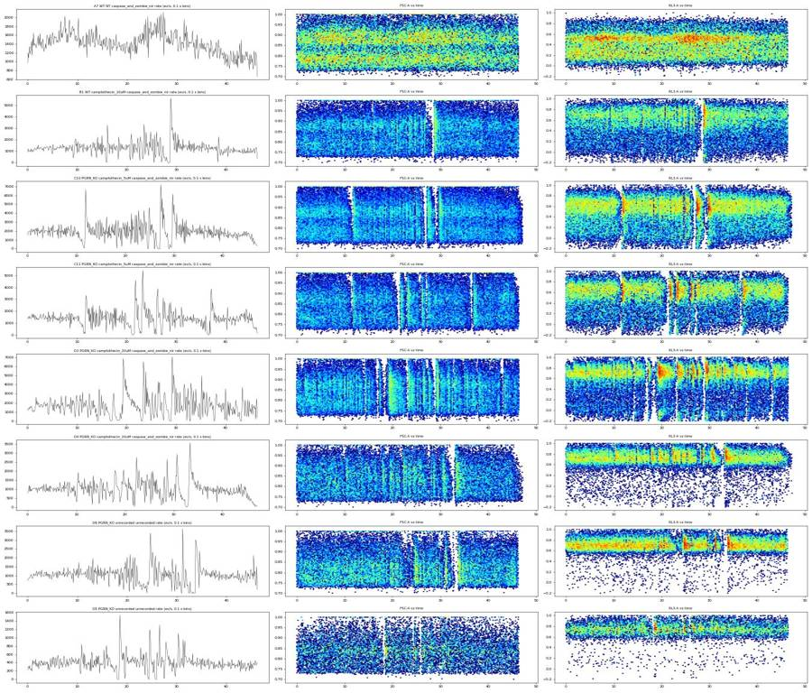
137
thinking
Clear clog signatures appear in B1, C10, C11, D3, D4, D5 and D6, and I'm now checking the borderline wells the same way.
138
tool call · Bash
cd /task/work; python tplot.py A11,B4,B5,C1,C2,C7,C9,D1,D2 tplot2.png
139
tool output
(Bash completed with no output)
140
tool call · Read
{
"file_path": "/task/work/tplot2.png"
}141
tool output
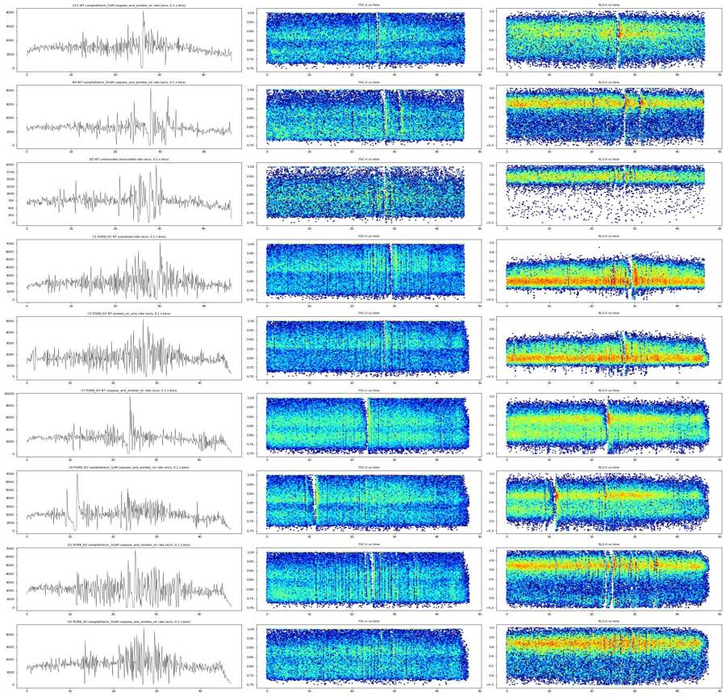
143
tool call · Bash
cd /task/work; cat > tqc2.py <<'EOF'
import flowkit as fk, numpy as np, pandas as pd
g=fk.parse_gating_xml('/task/outputs/gates.xml')
lay=pd.read_csv('/task/inputs/plate_layout.csv')
out=[]
for f,w in zip(lay.file,lay.well):
s=fk.Sample('/task/inputs/raw/'+f); r=g.gate_sample(s)
t=s.get_events(source='raw')[:,0]
M={p:r.get_gate_membership(p) for p in ['Cells','Single_Cells','Live','Caspase_pos']}
Tm=t.max(); bw=0.1
nb=int(np.floor(Tm/bw)); idx=np.minimum((t/bw).astype(int),nb-1)
h=np.bincount(idx,minlength=nb).astype(float)
rm=pd.Series(h).rolling(51,center=True,min_periods=10).median().values # 5 s window
dev=h/rm
core=np.zeros(nb,bool); core[10:nb-10]=True # ignore first/last 1 s
stop=core&(dev<0.2)
burst=core&(dev>2.0)
# episodes of stops
ep=[];i=0
while i<nb:
if stop[i]:
j=i
while j+1<nb and stop[j+1]: j+=1
ep.append((i*bw,(j+1)*bw)); i=j+1
else: i+=1
# disturbed = stop or burst bins, dilated by 1 bin
dist=stop|burst
dist=dist|np.roll(dist,1)|np.roll(dist,-1)
evd=dist[idx]
def pct(a,b): return a.sum()/max(b.sum(),1)*100
live_all=pct(M['Live'],M['Single_Cells']); live_st=pct(M['Live']&~evd,M['Single_Cells']&~evd); live_d=pct(M['Live']&evd,M['Single_Cells']&evd)
cp_all=pct(M['Caspase_pos'],M['Live']); cp_st=pct(M['Caspase_pos']&~evd,M['Live']&~evd); cp_d=pct(M['Caspase_pos']&evd,M['Live']&evd)
out.append(dict(well=w,n=len(t),rate=len(t)/Tm,n_stop_ep=len(ep),stop_s=stop.sum()*bw,longest_stop_s=max([b-a for a,b in ep],default=0),
burst_s=burst.sum()*bw,ev_disturbed_pct=evd.mean()*100,first_stop=ep[0][0] if ep else np.nan,
live_all=live_all,live_stable=live_st,live_dist=live_d,casp_all=cp_all,casp_stable=cp_st,casp_dist=cp_d,
stops=';'.join(f'{a:.1f}-{b:.1f}' for a,b in ep)))
df=pd.DataFrame(out); pd.set_option('display.width',300); pd.set_option('display.max_colwidth',80)
print(df.round(2).to_string())
df.to_csv('tqc2.csv',index=False)
EOF
python tqc2.py144
tool output
well n rate n_stop_ep stop_s longest_stop_s burst_s ev_disturbed_pct first_stop live_all live_stable live_dist casp_all casp_stable casp_dist stops 0 A1 90651 1909.37 1 0.2 0.2 0.0 0.61 29.5 100.00 100.00 100.00 1.01 1.00 1.79 29.5-29.7 1 A2 81008 1751.49 6 0.7 0.2 0.2 4.08 14.1 100.00 100.00 100.00 0.87 0.86 1.10 14.1-14.2;15.3-15.4;19.5-19.6;24.8-24.9;30.1-30.3;35.9-36.0 2 A3 95933 2036.92 1 0.1 0.1 0.0 0.77 26.3 90.26 90.28 88.12 31.29 31.30 29.21 26.3-26.4 3 A5 73753 1592.94 3 0.3 0.1 0.0 1.46 19.0 72.97 72.97 73.13 32.80 32.86 27.55 19.0-19.1;24.8-24.9;27.0-27.1 4 A7 64975 1405.17 0 0.0 0.0 0.0 0.00 NaN 89.26 89.26 0.00 46.27 46.27 0.00 5 A8 60216 1273.82 0 0.0 0.0 0.0 0.00 NaN 86.00 86.00 0.00 37.55 37.55 0.00 6 A9 80278 1729.57 0 0.0 0.0 0.0 0.00 NaN 84.56 84.56 0.00 36.71 36.71 0.00 7 A10 64936 1375.41 2 0.2 0.1 0.1 1.70 10.1 66.72 66.75 64.66 30.55 30.57 28.57 10.1-10.2;23.7-23.8 8 A11 68296 1473.48 2 0.6 0.5 0.2 2.39 25.8 71.91 71.93 70.99 32.95 33.01 29.18 25.8-26.3;31.4-31.5 9 B1 58310 1258.53 8 1.8 0.7 1.3 12.35 15.8 57.16 56.97 58.90 35.74 36.03 33.11 15.8-16.1;20.7-20.8;22.6-22.7;25.4-25.6;27.0-27.1;27.8-28.0;28.1-28.8;38.4-38.5 10 B2 51930 1101.19 6 0.7 0.2 0.4 5.27 21.1 53.80 53.64 57.12 27.35 27.57 22.90 21.1-21.2;22.1-22.2;22.4-22.6;22.8-22.9;24.8-24.9;25.8-25.9 11 B3 13995 296.38 0 0.0 0.0 0.1 0.62 NaN 21.06 21.04 23.53 37.92 37.70 58.33 12 B4 58782 1273.00 6 1.1 0.4 0.8 8.57 20.2 42.18 41.95 45.18 30.30 30.22 31.26 20.2-20.3;24.0-24.1;27.5-27.9;28.5-28.6;30.4-30.5;31.1-31.4 13 B5 33754 728.89 5 0.9 0.3 0.7 6.98 24.2 2.12 2.14 1.81 51.98 50.89 75.00 24.2-24.3;25.2-25.5;27.5-27.8;28.8-28.9;29.1-29.2 14 B6 8004 168.91 0 0.0 0.0 0.3 2.00 NaN 5.63 5.59 7.69 54.49 53.95 75.00 15 C1 95817 2070.82 13 1.8 0.5 1.3 16.06 14.3 99.99 100.00 99.97 0.12 0.10 0.23 14.3-14.4;22.4-22.5;24.9-25.1;26.3-26.4;27.3-27.4;27.8-27.9;28.0-28.1;28.8-28.9;29.0-29.5;31.5-31.6;32.7-32.8;33.9-34.0;38.5-38.6 16 C2 80166 1692.41 11 1.3 0.3 0.4 9.99 14.4 100.00 100.00 100.00 0.12 0.10 0.33 14.4-14.5;18.5-18.6;23.1-2 … [4,477 more characters not shown]
146
tool call · Bash
cd /task/work; cat > endqc.py <<'EOF'
from common import *
for w in wells:
s,d=load(w); t=d['Time'].values; Tm=t.max()
mid=((t>5)&(t<35)).sum()/30
edges=np.arange(Tm-6,Tm+1e-9,0.5)
h,_=np.histogram(t,edges)
rel=h/0.5/mid
first=((t<2)).sum()/2/mid
print(f"{w:4s} tmax={Tm:5.2f} midrate={mid:6.0f} first2s={first:.2f} last6s(0.5s bins, rel)={np.round(rel,2)}")
EOF
python endqc.py147
tool output
A1 tmax=47.48 midrate= 2066 first2s=0.77 last6s(0.5s bins, rel)=[0.7 0.75 0.74 0.75 0.78 0.61 0.69 0.67 0.8 0.85 0.76 0.66] A2 tmax=46.25 midrate= 1868 first2s=0.81 last6s(0.5s bins, rel)=[0.84 0.86 0.78 0.73 0.74 0.76 0.68 0.72 0.7 0.73 0.7 0.6 ] A3 tmax=47.10 midrate= 2184 first2s=0.80 last6s(0.5s bins, rel)=[0.75 0.75 0.67 0.74 0.7 0.7 0.69 0.76 0.69 0.64 0.65 0.68] A5 tmax=46.30 midrate= 1697 first2s=0.91 last6s(0.5s bins, rel)=[0.72 0.65 0.72 0.64 0.78 0.74 0.69 0.73 0.69 0.68 0.69 0.76] A7 tmax=46.24 midrate= 1502 first2s=0.88 last6s(0.5s bins, rel)=[0.64 0.73 0.68 0.68 0.75 0.76 0.71 0.75 0.7 0.7 0.66 0.75] A8 tmax=47.27 midrate= 1395 first2s=0.86 last6s(0.5s bins, rel)=[0.59 0.65 0.62 0.67 0.65 0.68 0.8 0.62 0.65 0.53 0.52 0.3 ] A9 tmax=46.41 midrate= 1847 first2s=0.82 last6s(0.5s bins, rel)=[0.77 0.81 0.76 0.77 0.77 0.74 0.72 0.74 0.67 0.62 0.61 0.65] A10 tmax=47.21 midrate= 1496 first2s=0.91 last6s(0.5s bins, rel)=[0.64 0.67 0.64 0.6 0.66 0.59 0.71 0.71 0.8 0.64 0.58 0.52] A11 tmax=46.35 midrate= 1574 first2s=0.82 last6s(0.5s bins, rel)=[0.73 0.75 0.74 0.69 0.74 0.75 0.72 0.66 0.65 0.67 0.68 0.66] B1 tmax=46.33 midrate= 1334 first2s=0.82 last6s(0.5s bins, rel)=[0.75 0.76 0.81 0.8 0.74 0.71 0.71 0.68 0.75 0.72 0.79 0.89] B2 tmax=47.16 midrate= 1176 first2s=0.72 last6s(0.5s bins, rel)=[0.72 0.83 0.78 0.9 0.8 0.76 0.75 0.73 0.76 0.75 0.66 0.9 ] B3 tmax=47.22 midrate= 320 first2s=0.80 last6s(0.5s bins, rel)=[0.68 0.79 0.62 0.71 0.61 0.74 0.82 0.92 0.89 0.86 0.7 0.55] B4 tmax=46.18 midrate= 1329 first2s=0.95 last6s(0.5s bins, rel)=[0.73 0.8 0.87 0.87 0.77 0.81 0.77 0.75 0.7 0.79 0.84 0.94] B5 tmax=46.31 midrate= 768 first2s=0.92 last6s(0.5s bins, rel)=[0.75 0.77 0.7 0.76 0.78 0.88 0.72 0.65 0.66 0.65 0.71 0.81] B6 tmax=47.38 midrate= 181 first2s=0.82 last6s(0.5s bins, rel)=[0.72 0.78 0.55 0.77 0.99 0.85 0.84 0.88 0.9 0.6 0.44 0.33] C1 tmax=46.27 midrate= 2173 first2s=0.81 last6s(0.5s bins, rel)=[0.79 0.8 0.83 0.84 0.9 0.81 0.9 0.8 0.69 0.78 0.61 0.91] C2 tmax=47.37 midrate= 1792 first2s=0.84 last6s(0.5s bins, rel)=[0.83 0.77 0.83 0.77 0.77 0.85 0.89 0.98 0.9 0.63 0.43 0.22] C3 tmax=46.21 midrate= 1584 first2s=0.86 last6s(0.5s bins, rel)=[0.73 0.77 0.72 0.68 0.68 0.59 0.79 0.65 0.67 0.67 0.75 0.83] C5 tmax=47.36 midrate= 2044 first2s=0.81 last6s(0.5s bins, rel)=[0.71 0.67 0.71 0.73 0.76 0.76 0.83 0.79 0.63 0.5 0.25 0.13] C7 tmax=47.42 midrate= 2724 first2s=0.90 last6s(0.5s bins, rel)=[0.7 0.65 0.57 0.8 0.7 0.71 0.76 0.84 0.73 0.56 0.35 0.21] C8 tmax=46.21 midrate= 1218 first2s=0.88 last6s(0.5s bins, rel)=[0.7 0.77 0.8 0.71 0.71 0.59 0.61 0.61 0.53 0.6 0.62 0.71] C9 tmax=47.37 midrate= 2153 first2s=0.86 last6s(0.5s bins, rel)=[0.66 0.7 0.64 0.64 0.67 0.75 0.82 0.62 0.52 0.33 0.22 0.13] C10 tmax=47.17 midrate= 1983 first2s=0.99 last6s(0.5s bins, rel)=[0.79 0.72 0.8 0.68 0.73 0.78 0.85 0.84 0.78 0.64 0.44 0.26] C11 tmax=46.43 midrate= 1399 first2s=1.06 last6s(0.5s bins, rel)=[1.01 0.86 1. 0.88 0.96 1.14 1.12 1.21 0.93 0.96 0.57 0.36] D1 tmax=47.42 midrate= 2148 first2s=1.00 last6s(0.5s bins, rel)=[0.83 0.81 0.8 0.92 0.97 0.97 0.9 0.99 0.7 0.56 0.34 0.18] D2 tmax=47.29 midrate= 1711 first2s=0.79 last6s(0.5s bins, rel)=[0.79 0.79 0.68 0.84 0.81 0.83 0.84 0.8 0.53 0.36 0.2 0.1 ] D3 tmax=46.43 midrate= 1747 first2s=0.84 last6s(0.5s bins, rel)=[0.78 0.83 0.7 0.92 0.41 0.36 1.16 0.76 0.79 0.72 0.83 0.78] D4 tmax=47.20 midrate= 1056 first2s=0.94 last6s(0.5s bins, rel)=[0.71 0.8 0.8 0.82 0.91 0.91 0.81 0.77 0.52 0.37 0.19 0.08] D5 tmax=46.37 midrate= 425 first2s=0.76 last6s(0.5s bins, rel)=[0.78 0.8 0.86 0.79 0.88 0.73 0.76 0.64 0.75 0.79 0.81 0.96] D6 tmax=46.24 midrate= 1017 first2s=0.94 last6s(0.5s bins, rel)=[0.86 0.97 0.99 0.86 0.94 0.79 0.84 0.87 0.98 1.04 1.19 0.91]
149
thinking
Flow disturbances are plate-wide but shift Live% and Caspase% by 0.5 points or less once disturbed periods are excluded. Now I'm comparing per-well fingerprints to see whether D4 and B3 behave like their replicates or like the unrecorded wells.
150
tool call · Bash
cd /task/work; cat > fp.py <<'EOF'
import flowkit as fk, numpy as np, pandas as pd
from common import TS,TF
g=fk.parse_gating_xml('/task/outputs/gates.xml')
lay=pd.read_csv('/task/inputs/plate_layout.csv')
rows=[]
for f,w in zip(lay.file,lay.well):
s=fk.Sample('/task/inputs/raw/'+f); r=g.gate_sample(s)
d=pd.DataFrame(s.get_events(source='raw'),columns=s.pnn_labels)
sc=r.get_gate_membership('Single_Cells'); lv=r.get_gate_membership('Live'); cp=r.get_gate_membership('Caspase_pos')
rl=TF.apply(d['RL3-A'].values); bl=TF.apply(d['BL1-A'].values)
lf=np.log10(np.clip(d['FSC-A'],1,None)); ls=np.log10(np.clip(d['SSC-A'],1,None))
# intact cluster fraction: FSC 10^5.1-5.45, SSC 10^4.95-5.35
intact=(lf>5.1)&(lf<5.45)&(ls>4.95)&(ls<5.35)
stripe=bl[cp]
rows.append(dict(well=w,trt=lay.set_index('well').loc[w,'treatment'],n=len(d),pct_ssc_lt30k=np.mean(d['SSC-A']<30000)*100,
pct_ssc_sat=np.mean(d['SSC-A']>=1048575)*100,pct_intact=np.mean(intact)*100,
zbright_sing=np.mean(rl[sc]>0.6)*100, zdim_live_med=np.median(rl[lv]) if lv.sum() else np.nan,
casp_med_logicle=np.median(stripe) if len(stripe) else np.nan, casp_med_raw=np.median(d['BL1-A'].values[cp]) if cp.sum() else np.nan,
bl1_neg_med_live=np.median(bl[lv&~cp]) if lv.sum() else np.nan,
zbright_med=np.median(rl[sc&(rl>0.6)]) if (sc&(rl>0.6)).sum() else np.nan,
fsc_med_sc=np.median(lf[sc]), ssc_med_sc=np.median(ls[sc])))
df=pd.DataFrame(rows); pd.set_option('display.width',250)
print(df.round(3).to_string())
df.to_csv('fp.csv',index=False)
EOF
python fp.py151
tool output
well trt n pct_ssc_lt30k pct_ssc_sat pct_intact zbright_sing zdim_live_med casp_med_logicle casp_med_raw bl1_neg_med_live zbright_med fsc_med_sc ssc_med_sc 0 A1 NT 90651 3.976 30.421 8.223 0.004 0.185 0.553 2304.0 0.257 0.736 5.075 5.199 1 A2 NT 81008 3.375 26.938 6.910 0.004 0.188 0.549 2186.0 0.276 0.603 4.997 5.210 2 A3 NT 95933 4.415 26.688 9.745 6.823 0.261 0.567 2780.0 0.315 0.706 5.064 5.191 3 A5 DMSO 73753 4.038 28.857 7.487 24.183 0.243 0.570 2872.0 0.310 0.711 5.037 5.228 4 A7 NT 64975 3.986 26.404 7.891 8.495 0.251 0.580 3276.0 0.311 0.725 4.978 5.194 5 A8 camptothecin_1uM 60216 4.595 29.442 9.979 11.156 0.249 0.589 3721.5 0.323 0.705 5.049 5.174 6 A9 camptothecin_1uM 80278 3.002 24.789 10.966 11.625 0.258 0.609 4852.5 0.328 0.710 5.047 5.171 7 A10 camptothecin_5uM 64936 3.045 25.157 9.046 29.510 0.236 0.581 3324.0 0.318 0.709 5.043 5.217 8 A11 camptothecin_5uM 68296 3.107 27.185 9.024 24.647 0.238 0.584 3484.0 0.320 0.699 5.039 5.202 9 B1 camptothecin_10uM 58310 2.387 27.381 6.510 38.650 0.229 0.578 3218.0 0.310 0.709 5.004 5.216 10 B2 camptothecin_10uM 51930 2.605 23.940 6.162 41.787 0.236 0.566 2717.5 0.299 0.689 5.000 5.230 11 B3 camptothecin_20uM 13995 0.800 13.226 4.087 75.514 0.328 0.578 3216.0 0.328 0.711 4.938 5.226 12 B4 camptothecin_20uM 58782 3.208 20.069 5.702 53.746 0.210 0.579 3247.0 0.305 0.692 4.967 5.240 13 B5 unrecorded 33754 0.394 26.498 1.464 96.231 0.352 0.564 2647.5 0.384 0.728 4.963 5.236 14 B6 unrecorded 8004 0.175 15.442 1.837 91.986 0.351 0.576 3121.0 0.355 0.701 4.970 5.239 15 C1 NT 95817 7.420 35.862 9.253 0.004 0.176 0.544 2037.5 0.230 0.725 5.112 5.142 16 C2 NT 80166 7.028 33.970 9.638 0.000 0.176 0.544 2036.5 0.232 NaN 5.112 5.163 17 C3 NT 68270 6.238 36.949 9.070 9.530 0.281 0.574 3023.0 0.313 0.712 5.123 5.197 18 C5 DMSO 88646 4.036 39.809 10.519 7.924 0.256 0.585 3540.0 0.305 0.713 5.171 5.196 19 C7 NT 119052 5.614 31.877 6.409 5.586 0.235 0.615 5264.0 0.298 0.728 4.954 5.158 20 C8 camptothecin_1uM 52267 7.707 35.523 8.238 11.959 0.256 0.584 3490.0 0.329 0.708 5.069 5.150 21 C9 camptothecin_1uM 92282 5.750 36.338 9.903 8.033 0.247 0.614 5207.0 0.313 0.706 5.091 5.133 22 C10 camptothecin_5uM 88797 4.935 30.372 7.304 27.121 0.236 0.596 4051.0 0.333 0.692 5.032 5.205 23 C11 camptothecin_5uM 63651 4.591 29.685 6.994 35.071 0.270 0.592 3851.5 0.339 0.701 5.018 5.217 24 D1 camptothecin_10uM 97824 4.673 24.658 5.214 49.343 0.167 0.608 4794.0 0.340 0.695 4.975 5.212 25 D2 camptothecin_10uM 73937 2.283 26.616 6.899 43.240 0.236 0.626 6107.0 0.333 0.700 5.008 5.219 26 D3 camptothecin_20uM 77334 3.304 28.470 5.687 51.213 0.135 0.625 6060.0 0.322 0.702 4.996 5.191 27 D4 camptothecin_20uM 46763 0.785 26.634 3.069 88.146 0.286 0.584 3482.0 0.336 0.710 4.967 5.228 28 D5 unrecorded 18412 0.413 25.380 2.531 96.216 0.471 0.575 3082.0 0.406 0.721 4.990 5.255 29 D6 unrecorded 46753 0.533 22.491 0.937 93.434 0.327 0.576 3122.0 0.358 0.697 4.929 5.254
153
tool call · Bash
cd /task/work; cat > dup.py <<'EOF'
from common import *
import itertools
H={}
for w in wells:
s,d=load(w)
H[w]=set(map(tuple,np.round(d[['FSC-A','SSC-A','BL1-A','RL3-A']].values,1)))
print(w,len(d),len(H[w]),'within-file dup rows:',len(d)-len(H[w]))
for a,b in itertools.combinations(wells,2):
k=len(H[a]&H[b])
if k>50: print('overlap',a,b,k)
EOF
python dup.py154
tool output
A1 90651 90649 within-file dup rows: 2 A2 81008 81008 within-file dup rows: 0 A3 95933 95933 within-file dup rows: 0 A5 73753 73753 within-file dup rows: 0 A7 64975 64975 within-file dup rows: 0 A8 60216 60216 within-file dup rows: 0 A9 80278 80278 within-file dup rows: 0 A10 64936 64936 within-file dup rows: 0 A11 68296 68295 within-file dup rows: 1 B1 58310 58310 within-file dup rows: 0 B2 51930 51928 within-file dup rows: 2 B3 13995 13995 within-file dup rows: 0 B4 58782 58782 within-file dup rows: 0 B5 33754 33753 within-file dup rows: 1 B6 8004 8004 within-file dup rows: 0 C1 95817 95817 within-file dup rows: 0 C2 80166 80166 within-file dup rows: 0 C3 68270 68270 within-file dup rows: 0 C5 88646 88646 within-file dup rows: 0 C7 119052 119052 within-file dup rows: 0 C8 52267 52267 within-file dup rows: 0 C9 92282 92282 within-file dup rows: 0 C10 88797 88796 within-file dup rows: 1 C11 63651 63650 within-file dup rows: 1 D1 97824 97820 within-file dup rows: 4 D2 73937 73933 within-file dup rows: 4 D3 77334 77327 within-file dup rows: 7 D4 46763 46763 within-file dup rows: 0 D5 18412 18412 within-file dup rows: 0 D6 46753 46753 within-file dup rows: 0
156
tool call · Bash
cd /task/work; cat > cv.py <<'EOF'
from common import *
res=[]
for w in wells:
s,d=load(w); t=d['Time'].values; Tm=t.max(); bw=0.25
nb=int(Tm/bw); idx=np.minimum((t/bw).astype(int),nb-1); h=np.bincount(idx,minlength=nb).astype(float)
rm=pd.Series(h).rolling(21,center=True,min_periods=5).median().values
core=slice(4,nb-6)
z=(h[core]-rm[core])/np.sqrt(rm[core])
cv=np.std(h[core]/rm[core]); pois=np.mean(1/np.sqrt(rm[core]))
res.append((w,cv,pois,cv/pois,np.mean(np.abs(z)>5)*100))
df=pd.DataFrame(res,columns=['well','cv','pois_cv','excess','pct_bins_|z|>5'])
print(df.round(3).sort_values('cv',ascending=False).to_string())
EOF
python cv.py157
tool output
well cv pois_cv excess pct_bins_|z|>5 26 D3 0.526 0.049 10.645 51.429 29 D6 0.479 0.065 7.411 21.264 22 C10 0.404 0.046 8.770 25.843 23 C11 0.404 0.054 7.533 22.857 27 D4 0.403 0.064 6.335 24.719 9 B1 0.335 0.057 5.917 17.714 28 D5 0.328 0.101 3.250 10.857 24 D1 0.315 0.044 7.238 31.844 21 C9 0.258 0.045 5.706 15.084 15 C1 0.246 0.044 5.595 22.857 19 C7 0.228 0.040 5.712 17.877 16 C2 0.226 0.049 4.654 16.760 13 B5 0.220 0.074 2.977 8.571 12 B4 0.209 0.056 3.716 9.770 25 D2 0.196 0.050 3.907 15.084 14 B6 0.167 0.153 1.090 0.000 8 A11 0.156 0.052 3.013 5.714 17 C3 0.156 0.052 2.984 9.770 20 C8 0.151 0.060 2.535 8.621 10 B2 0.147 0.060 2.452 5.618 1 A2 0.136 0.048 2.855 8.571 0 A1 0.131 0.046 2.858 7.263 7 A10 0.123 0.054 2.277 5.056 11 B3 0.120 0.116 1.030 0.000 18 C5 0.120 0.046 2.600 8.939 3 A5 0.109 0.050 2.171 2.857 5 A8 0.089 0.056 1.575 1.117 6 A9 0.075 0.048 1.572 1.714 4 A7 0.069 0.053 1.283 0.000 2 A3 0.061 0.044 1.388 0.562
159
agent
Status: QC decisions made. Writing `flags.csv` with well-specific evidence now, then `notes.md`.
160
tool call · Bash
cd /task/work; cat > ev.py <<'EOF'
import flowkit as fk, numpy as np, pandas as pd
from common import TF
g=fk.parse_gating_xml('/task/outputs/gates.xml')
lay=pd.read_csv('/task/inputs/plate_layout.csv')
for w in ['A1','A2','A3','A7','C1','C2','C3','C7','A5','A8','A9','C5']:
f=lay.set_index('well').loc[w,'file']; s=fk.Sample('/task/inputs/raw/'+f); r=g.gate_sample(s)
d=s.get_events(source='raw'); i={c:k for k,c in enumerate(s.pnn_labels)}
sc=r.get_gate_membership('Single_Cells'); lv=r.get_gate_membership('Live'); cp=r.get_gate_membership('Caspase_pos')
rl=d[:,i['RL3-A']]; bl=d[:,i['BL1-A']]
zb=sc&(rl>4302)
print(w,'sing',sc.sum(),'zbright',zb.sum(),f'{zb.sum()/sc.sum()*100:.2f}%','outside_live',(sc&~lv).sum(),'RL3med_sing',np.median(rl[sc]).round(0),'RL3 p99',np.percentile(rl[sc],99).round(0),
'BL1>1704 in sing',f'{np.mean(bl[sc]>1704)*100:.2f}%','casp%',f'{cp.sum()/max(lv.sum(),1)*100:.1f}')
EOF
python ev.py161
tool output
A1 sing 26263 zbright 1 0.00% outside_live 1 RL3med_sing 14.0 RL3 p99 245.0 BL1>1704 in sing 1.01% casp% 1.0 A2 sing 24264 zbright 1 0.00% outside_live 1 RL3med_sing 16.0 RL3 p99 221.0 BL1>1704 in sing 0.87% casp% 0.9 A3 sing 31832 zbright 2172 6.82% outside_live 3100 RL3med_sing 96.0 RL3 p99 39464.0 BL1>1704 in sing 30.17% casp% 31.3 A7 sing 22449 zbright 1907 8.49% outside_live 2412 RL3med_sing 88.0 RL3 p99 52731.0 BL1>1704 in sing 43.59% casp% 46.3 C1 sing 26628 zbright 1 0.00% outside_live 2 RL3med_sing 7.0 RL3 p99 157.0 BL1>1704 in sing 0.12% casp% 0.1 C2 sing 23128 zbright 0 0.00% outside_live 0 RL3med_sing 7.0 RL3 p99 156.0 BL1>1704 in sing 0.12% casp% 0.1 C3 sing 18740 zbright 1786 9.53% outside_live 2395 RL3med_sing 129.0 RL3 p99 51288.0 BL1>1704 in sing 24.81% casp% 25.5 C7 sing 33153 zbright 1852 5.59% outside_live 2380 RL3med_sing 64.0 RL3 p99 46776.0 BL1>1704 in sing 51.33% casp% 52.8 A5 sing 22785 zbright 5510 24.18% outside_live 6159 RL3med_sing 157.0 RL3 p99 56271.0 BL1>1704 in sing 34.75% casp% 32.8 A8 sing 20187 zbright 2252 11.16% outside_live 2827 RL3med_sing 94.0 RL3 p99 46023.0 BL1>1704 in sing 36.52% casp% 37.5 A9 sing 30383 zbright 3532 11.62% outside_live 4692 RL3med_sing 118.0 RL3 p99 54556.0 BL1>1704 in sing 36.43% casp% 36.7 C5 sing 25026 zbright 1983 7.92% outside_live 2289 RL3med_sing 86.0 RL3 p99 45053.0 BL1>1704 in sing 28.58% casp% 27.2
163
tool call · Bash
cd /task/work; cat > flags.py <<'EOF'
import pandas as pd, numpy as np
lay=pd.read_csv('/task/inputs/plate_layout.csv')
c=pd.read_csv('/task/outputs/counts.csv')
cnt=c.pivot(index='well',columns='population',values='count')
tq=pd.read_csv('tqc2.csv').set_index('well'); cv=None
def se(w):
n=cnt.loc[w,'Live']; p=cnt.loc[w,'Caspase_pos']/n
return np.sqrt(p*(1-p)/n)*100
F={}
F['A2']=('bad_control',"Labelled Zombie NIR-only, but no Zombie signal: 1 of 24,264 singlets (0.004%) is Zombie-bright (RL3-A > 4,300) vs 1,907/22,449 (8.5%) in NT both-dye A7 and 2,172/31,832 (6.8%) in A3; RL3-A singlet median 16 and 99th pct 221 = identical to unstained A1 (14 / 245); Live gate keeps 24,263/24,264 (100.0%). Well behaves as a second unstained sample, so it cannot serve as the viability-dye-present reference. confidence=high")
F['C2']=('bad_control',"Labelled Zombie NIR-only, but 0 of 23,128 singlets are Zombie-bright (RL3-A > 4,300) vs 1,852/33,153 (5.6%) in NT both-dye C7 and 1,786/18,740 (9.5%) in C3; RL3-A singlet median 7, 99th pct 156 = identical to unstained C1 (7 / 157); Live gate keeps 23,128/23,128 (100%). Zombie NIR absent; not a valid viability-dye-present reference. confidence=high")
F['A3']=('bad_control',"Labelled CellEvent caspase-only (no Zombie), but contains a Zombie-bright population: 2,172 of 31,832 singlets (6.8%) have RL3-A > 4,300 (RL3-A 99th pct 39,464 vs 245 in unstained A1); 3,100 singlets fall outside the Live gate vs 1/26,263 in A1. Pattern matches NT both-dye A7 (8.5% Zombie-bright), so it is not a valid Zombie-negative single-stain reference. confidence=high")
F['C3']=('bad_control',"Labelled CellEvent caspase-only (no Zombie), but 1,786 of 18,740 singlets (9.5%) are Zombie-bright (RL3-A > 4,300; RL3-A 99th pct 51,288 vs 157 in unstained C1); 2,395 singlets outside Live vs 2/26,628 in C1. Matches NT both-dye C7 (5.6% Zombie-bright); not a valid single-stain control. confidence=high")
F['A5']=('bad_control',"WT DMSO vehicle is out of family with every other untreated/low-dose WT well: 5,510 of 22,785 singlets (24.2%) Zombie-bright and Live = 73.0% of singlets, vs NT A7 8.5% / 89.3%, 1 uM CPT A8/A9 11.2-11.6% / 86.0-84.6%, and PGRN-KO vehicle C5 7.9% / 90.9%; its viability profile matches the 5 uM CPT wells A10/A11 (Live 66.7/71.9%). Flow is clean (0.25-s rate CV 0.11), so the deviation is in the sample; as a vehicle baseline it would mask the treatment effect. confidence=medium")
for w,conf in [('B5','high'),('B6','high'),('D5','high'),('D6','medium')]:
n=int(cnt.loc[w,'Cells']); sc=int(cnt.loc[w,'Single_Cells']); lv=int(cnt.loc[w,'Live']); cp=int(cnt.loc[w,'Caspase_pos'])
tot=int(tq.loc[w,'n']); rate=tq.loc[w,'rate']
extra=''
if w=='D6': extra=f" Flow also unstable: {int(tq.loc[w,'n_stop_ep'])} stop episodes (0.1-s rate <20% of 5-s rolling median) totalling {tq.loc[w,'stop_s']:.1f} s, longest 0.9 s at 32.9-33.8 s, 0.25-s rate CV 0.48 (A7 0.07)."
if w=='B6': extra=" Lowest total event count on the plate (median well ~68,000)."
F[w]=('too_few_events',f"Only {lv} Live events ({lv/sc*100:.1f}% of {sc} singlets; {tot:,} total events, {rate:.0f} events/s over the 46-47 s run vs ~1,000-2,500/s in most wells); Caspase_pos = {cp}/{lv} = {cp/lv*100:.1f}% with binomial SE +/-{se(w):.1f} points. >94% of singlets are Zombie-bright. Treatment and stain not recorded in the plate map, so the well cannot be assigned to a condition.{extra} Threshold used: <500 Live events. confidence={conf}")
w='D3'
F[w]=('clog_or_interrupted_flow',f"Most unstable flow on the plate: {int(tq.loc[w,'n_stop_ep'])} stop episodes (0.1-s event rate <20% of the 5-s rolling median) between 12.2 and 43.3 s totalling {tq.loc[w,'stop_s']:.1f} s, each followed by bursts up to 2.5x the median rate ({tq.loc[w,'burst_s']:.1f} s of bursts); {tq.loc[w,'ev_disturbed_pct']:.1f}% of the {int(tq.loc[w,'n']):,} events were acquired in stop/burst periods; 0.25-s rate CV 0.53 vs plate median ~0.20 and 0.07 in A7; bursts after stops carry excess Zombie-bright events (e.g. 18-20 s). Live% stable vs disturbed periods 45.0 vs 46.1; Caspase_pos% 35.6 vs 34.0. No time gate is allowed, so the disturbed events cannot be removed. confidence=medium")
rows=[]
for f,w in zip(lay.file,lay.well):
if w in F: rows.append(dict(file=f,well=w,usable='no',reason_category=F[w][0],evidence=F[w][1]))
else: rows.append(dict(file=f,well=w,usable='yes',reason_category='ok',evidence=''))
df=pd.DataFrame(rows); df.to_csv('/task/outputs/flags.csv',index=False)
print(df[['well','usable','reason_category']].to_string()); print(df.loc[df.usable=='no','evidence'].str.len().max())
EOF
python flags.py; python -c "
import pandas as pd; d=pd.read_csv('/task/outputs/flags.csv'); [print(r.well, r.evidence,'\n') for r in d.itertuples() if r.usable=='no']"164
tool output
well usable reason_category 0 A1 yes ok 1 A2 no bad_control 2 A3 no bad_control 3 A5 no bad_control 4 A7 yes ok 5 A8 yes ok 6 A9 yes ok 7 A10 yes ok 8 A11 yes ok 9 B1 yes ok 10 B2 yes ok 11 B3 yes ok 12 B4 yes ok 13 B5 no too_few_events 14 B6 no too_few_events 15 C1 yes ok 16 C2 no bad_control 17 C3 no bad_control 18 C5 yes ok 19 C7 yes ok 20 C8 yes ok 21 C9 yes ok 22 C10 yes ok 23 C11 yes ok 24 D1 yes ok 25 D2 yes ok 26 D3 no clog_or_interrupted_flow 27 D4 yes ok 28 D5 no too_few_events 29 D6 no too_few_events 562 A2 Labelled Zombie NIR-only, but no Zombie signal: 1 of 24,264 singlets (0.004%) is Zombie-bright (RL3-A > 4,300) vs 1,907/22,449 (8.5%) in NT both-dye A7 and 2,172/31,832 (6.8%) in A3; RL3-A singlet median 16 and 99th pct 221 = identical to unstained A1 (14 / 245); Live gate keeps 24,263/24,264 (100.0%). Well behaves as a second unstained sample, so it cannot serve as the viability-dye-present reference. confidence=high A3 Labelled CellEvent caspase-only (no Zombie), but contains a Zombie-bright population: 2,172 of 31,832 singlets (6.8%) have RL3-A > 4,300 (RL3-A 99th pct 39,464 vs 245 in unstained A1); 3,100 singlets fall outside the Live gate vs 1/26,263 in A1. Pattern matches NT both-dye A7 (8.5% Zombie-bright), so it is not a valid Zombie-negative single-stain reference. confidence=high A5 WT DMSO vehicle is out of family with every other untreated/low-dose WT well: 5,510 of 22,785 singlets (24.2%) Zombie-bright and Live = 73.0% of singlets, vs NT A7 8.5% / 89.3%, 1 uM CPT A8/A9 11.2-11.6% / 86.0-84.6%, and PGRN-KO vehicle C5 7.9% / 90.9%; its viability profile matches the 5 uM CPT wells A10/A11 (Live 66.7/71.9%). Flow is clean (0.25-s rate CV 0.11), so the deviation is in the sample; as a vehicle baseline it would mask the treatment effect. confidence=medium B5 Only 177 Live events (2.1% of 8332 singlets; 33,754 total events, 729 events/s over the 46-47 s run vs ~1,000-2,500/s in most wells); Caspase_pos = 92/177 = 52.0% with binomial SE +/-3.8 points. >94% of singlets are Zombie-bright. Treatment and stain not recorded in the plate map, so the well cannot be assigned to a condition. Threshold used: <500 Live events. confidence=high B6 Only 156 Live events (5.6% of 2770 singlets; 8,004 total events, 169 events/s over the 46-47 s run vs ~1,000-2,500/s in most wells); Caspase_pos = 85/156 = 54.5% with binomial SE +/-4.0 points. >94% of singlets are Zombie-bright. Treatment and stain not recorded in the plate map, so the well cannot be assigned to a condition. Lowest total event count on the plate (median well ~68,000). Threshold used: <500 Live events. confidence=high C2 Labelled Zombie NIR-only, but 0 of 23,128 singlets are Zombie-bright (RL3-A > 4,300) vs 1,852/33,153 (5.6%) in NT both-dye C7 and 1,786/18,740 (9.5%) in C3; RL3-A singlet median 7, 99th pct 156 = identical to unstained C1 (7 / 157); Live gate keeps 23,128/23,128 (100%). Zombie NIR absent; not a valid viability-dye-present reference. confidence=high C3 Labelled CellEvent caspase-only (no Zombie), but 1,786 of 18,740 singlets (9.5%) are Zombie-bright (RL3-A > 4,300; RL3-A 99th pct 51,288 vs 157 in unstained C1); 2,395 singlets outside Live vs 2/26,628 in C1. Matches NT both-dye C7 (5.6% Zombie-bright); not a valid single-stain control. confidence=high D3 Most unstable flow on the plate: 17 stop episodes (0.1-s event rate <20% of the 5-s rolling median) between 12.2 and 43.3 s totalling 4.2 s, each followed by bursts up to 2.5x the median rate (4.2 s of bursts); 34.3% of the 77,334 events were acquired in stop/burst periods; 0.25-s rate CV 0.53 vs plate median ~0.20 and 0.07 in A7; bursts after stops carry excess Zombie-bright events (e.g. 18-20 s). Live% stable vs disturbed periods 45.0 vs 46.1; Caspase_pos% 35.6 vs 34.0. No time gate is allowed, so the disturbed events cannot be removed. confidence=medium D5 Only 80 Live events (1.4% of 5682 singlets; 18,412 total events, 397 events/s over the 46-47 s run vs ~1,000-2,500/s in most wells); Caspase_pos = 37/80 = 46.2% with binomial SE +/-5.6 points. >94% of singlets are Zombie-bright. Treatment and stain not recorded in the plate map, so the well cannot be assigned to a condition. Threshold used: <500 Live events. confidence=high D6 Only 378 Live events (3.2% of 11651 singlets; 46,753 total events, 1011 events/s over the 46-47 s run vs ~1,000-2,500/s in most wells); Caspase_pos = 239/378 = 63.2% with binomial SE +/-2.5 points. >94% of singlets are Zombie-bright. Treatment and stain not recorded in the plate map, so the well cannot be assigned to a condition. Flow also unstable: 8 stop episodes (0.1-s rate <20% of 5-s rolling median) totalling 1.9 s, longest 0.9 s at 32.9-33.8 s, 0.25-s rate CV 0.48 (A7 0.07). Threshold used: <500 Live events. confidence=medium
166
tool call · Bash
cd /task/work; python - <<'EOF'
import re
s=open('flags.py').read()
s=s.replace(""" extra=''""",""" fp=pd.read_csv('fp.csv').set_index('well'); zb=fp.loc[w,'zbright_sing']
ratestr=f"{rate:.0f} events/s over the 46-47 s run vs ~1,100-2,500/s in most wells" if rate<800 else f"{rate:.0f} events/s"
extra=''""")
s=s.replace("""{tot:,} total events, {rate:.0f} events/s over the 46-47 s run vs ~1,000-2,500/s in most wells)""","""{tot:,} total events, {ratestr})""")
s=s.replace(""">94% of singlets are Zombie-bright.""","""{zb:.1f}% of singlets are Zombie-bright (RL3-A > 4,300) vs 5.6-8.5% in NT A7/C7.""")
open('flags.py','w').write(s)
EOF
python flags.py >/dev/null; python -c "
import pandas as pd; d=pd.read_csv('/task/outputs/flags.csv'); [print(r.well, r.evidence,'\n') for r in d.itertuples() if r.reason_category=='too_few_events']; print(d.shape)"167
tool output
B5 Only 177 Live events (2.1% of 8332 singlets; 33,754 total events, 729 events/s over the 46-47 s run vs ~1,100-2,500/s in most wells); Caspase_pos = 92/177 = 52.0% with binomial SE +/-3.8 points. 96.2% of singlets are Zombie-bright (RL3-A > 4,300) vs 5.6-8.5% in NT A7/C7. Treatment and stain not recorded in the plate map, so the well cannot be assigned to a condition. Threshold used: <500 Live events. confidence=high B6 Only 156 Live events (5.6% of 2770 singlets; 8,004 total events, 169 events/s over the 46-47 s run vs ~1,100-2,500/s in most wells); Caspase_pos = 85/156 = 54.5% with binomial SE +/-4.0 points. 92.0% of singlets are Zombie-bright (RL3-A > 4,300) vs 5.6-8.5% in NT A7/C7. Treatment and stain not recorded in the plate map, so the well cannot be assigned to a condition. Lowest total event count on the plate (median well ~68,000). Threshold used: <500 Live events. confidence=high D5 Only 80 Live events (1.4% of 5682 singlets; 18,412 total events, 397 events/s over the 46-47 s run vs ~1,100-2,500/s in most wells); Caspase_pos = 37/80 = 46.2% with binomial SE +/-5.6 points. 96.2% of singlets are Zombie-bright (RL3-A > 4,300) vs 5.6-8.5% in NT A7/C7. Treatment and stain not recorded in the plate map, so the well cannot be assigned to a condition. Threshold used: <500 Live events. confidence=high D6 Only 378 Live events (3.2% of 11651 singlets; 46,753 total events, 1011 events/s); Caspase_pos = 239/378 = 63.2% with binomial SE +/-2.5 points. 93.4% of singlets are Zombie-bright (RL3-A > 4,300) vs 5.6-8.5% in NT A7/C7. Treatment and stain not recorded in the plate map, so the well cannot be assigned to a condition. Flow also unstable: 8 stop episodes (0.1-s rate <20% of 5-s rolling median) totalling 1.9 s, longest 0.9 s at 32.9-33.8 s, 0.25-s rate CV 0.48 (A7 0.07). Threshold used: <500 Live events. confidence=medium (30, 5)
169
tool call · Bash
cd /task/work; python -c "
import pandas as pd; t=pd.read_csv('tqc2.csv'); print(t.n.median())
c=pd.read_csv('/task/outputs/counts.csv'); print(c.shape, c.columns.tolist()); print(c.head(8))
"; head -c 1500 /task/outputs/gates.xml; grep -c 'vertex' /task/outputs/gates.xml170
tool output
68283.0
(120, 6) ['file', 'well', 'population', 'count', 'parent_population', 'pct_of_parent']
file ... pct_of_parent
0 Caspase_primaryneurons_caspase_Group_A1.fcs ... 33.2925
1 Caspase_primaryneurons_caspase_Group_A1.fcs ... 87.0212
2 Caspase_primaryneurons_caspase_Group_A1.fcs ... 99.9962
3 Caspase_primaryneurons_caspase_Group_A1.fcs ... 1.0053
4 Caspase_primaryneurons_caspase_Group_A2.fcs ... 34.0991
5 Caspase_primaryneurons_caspase_Group_A2.fcs ... 87.8398
6 Caspase_primaryneurons_caspase_Group_A2.fcs ... 99.9959
7 Caspase_primaryneurons_caspase_Group_A2.fcs ... 0.8696
[8 rows x 6 columns]
<?xml version='1.0' encoding='UTF-8'?>
<gating:Gating-ML xmlns:gating="http://www.isac-net.org/std/Gating-ML/v2.0/gating" xmlns:data-type="http://www.isac-net.org/std/Gating-ML/v2.0/datatypes" xmlns:transforms="http://www.isac-net.org/std/Gating-ML/v2.0/transformations">
<transforms:transformation transforms:id="logicle_scatter">
<transforms:logicle transforms:T="1048576" transforms:W="0.5" transforms:M="6.0" transforms:A="0"/>
</transforms:transformation>
<transforms:transformation transforms:id="logicle_fluor">
<transforms:logicle transforms:T="1048576" transforms:W="1.0" transforms:M="6.0" transforms:A="0"/>
</transforms:transformation>
<gating:PolygonGate gating:id="Cells">
<gating:dimension gating:compensation-ref="uncompensated" gating:transformation-ref="logicle_scatter">
<data-type:fcs-dimension data-type:name="FSC-A"/>
</gating:dimension>
<gating:dimension gating:compensation-ref="uncompensated" gating:transformation-ref="logicle_scatter">
<data-type:fcs-dimension data-type:name="SSC-A"/>
</gating:dimension>
<gating:vertex>
<gating:coordinate data-type:value="0.9319"/>
<gating:coordinate data-type:value="0.9331"/>
</gating:vertex>
<gating:vertex>
<gating:coordinate data-type:value="0.9145"/>
<gating:coordinate data-type:value="0.9426"/>
</gating:vertex>
<gating:vertex>
<gating:coordinate data-type:value="0.8933"/>
<gating:coordinate data-type:value="0.9454"/>
</g56171
tool call · Bash
cd /task/work; sed -n '/Single_Cells/,$p' /task/outputs/gates.xml | grep -v '^\s*$' | head -80
172
tool output
<gating:PolygonGate gating:id="Single_Cells" gating:parent_id="Cells">
<gating:dimension gating:compensation-ref="uncompensated">
<data-type:fcs-dimension data-type:name="SSC-A"/>
</gating:dimension>
<gating:dimension gating:compensation-ref="uncompensated">
<data-type:fcs-dimension data-type:name="SSC-H"/>
</gating:dimension>
<gating:vertex>
<gating:coordinate data-type:value="20000.0"/>
<gating:coordinate data-type:value="13600.0"/>
</gating:vertex>
<gating:vertex>
<gating:coordinate data-type:value="550000.0"/>
<gating:coordinate data-type:value="330000.0"/>
</gating:vertex>
<gating:vertex>
<gating:coordinate data-type:value="550000.0"/>
<gating:coordinate data-type:value="560000.0"/>
</gating:vertex>
<gating:vertex>
<gating:coordinate data-type:value="20000.0"/>
<gating:coordinate data-type:value="25000.0"/>
</gating:vertex>
</gating:PolygonGate>
<gating:RectangleGate gating:id="Live" gating:parent_id="Single_Cells">
<gating:dimension gating:compensation-ref="uncompensated" gating:transformation-ref="logicle_fluor" gating:min="-0.3" gating:max="0.54">
<data-type:fcs-dimension data-type:name="RL3-A"/>
</gating:dimension>
<gating:dimension gating:compensation-ref="uncompensated" gating:transformation-ref="logicle_scatter" gating:min="0.7" gating:max="0.97">
<data-type:fcs-dimension data-type:name="SSC-A"/>
</gating:dimension>
</gating:RectangleGate>
<gating:RectangleGate gating:id="Caspase_pos" gating:parent_id="Live">
<gating:dimension gating:compensation-ref="uncompensated" gating:transformation-ref="logicle_fluor" gating:min="0.53">
<data-type:fcs-dimension data-type:name="BL1-A"/>
</gating:dimension>
<gating:dimension gating:compensation-ref="uncompensated" gating:transformation-ref="logicle_scatter" gating:min="0.7" gating:max="0.97">
<data-type:fcs-dimension data-type:name="SSC-A"/>
</gating:dimension>
</gating:RectangleGate>
</gating:Gating-ML>174
tool call · Bash
cd /task/work; cat > final_ov.py <<'EOF'
import flowkit as fk, numpy as np, pandas as pd, matplotlib
matplotlib.use('Agg'); import matplotlib.pyplot as plt
from common import TS,TF,title
g=fk.parse_gating_xml('/task/outputs/gates.xml')
lay=pd.read_csv('/task/inputs/plate_layout.csv').set_index('well')
ws=['A1','A2','A3','A7','C7','B1','D3','B4']
fig,axs=plt.subplots(2,8,figsize=(36,9))
for j,w in enumerate(ws):
s=fk.Sample('/task/inputs/raw/'+lay.loc[w,'file']); r=g.gate_sample(s); d=s.get_events(source='raw'); i={c:k for k,c in enumerate(s.pnn_labels)}
sc=r.get_gate_membership('Single_Cells'); lv=r.get_gate_membership('Live')
ax=axs[0,j]; ax.hexbin(TF.apply(d[sc,i['RL3-A']]),TS.apply(d[sc,i['SSC-A']]),gridsize=90,bins='log',mincnt=1,cmap='jet',extent=(-0.3,1.0,0.68,1.0))
ax.plot([-0.3,0.54,0.54,-0.3,-0.3],[0.7,0.7,0.97,0.97,0.7],'k-'); ax.set_title(f'{w} Single_Cells: RL3-A vs SSC-A, Live={lv.sum()}',fontsize=9)
ax=axs[1,j]; ax.hexbin(TF.apply(d[lv,i['BL1-A']]),TS.apply(d[lv,i['SSC-A']]),gridsize=90,bins='log',mincnt=1,cmap='jet',extent=(-0.3,1.0,0.68,1.0))
ax.plot([0.53,1.0,1.0,0.53,0.53],[0.7,0.7,0.97,0.97,0.7],'k-'); ax.set_title(f'{w} Live: BL1-A vs SSC-A, Casp={r.get_gate_membership("Caspase_pos").sum()}',fontsize=9)
plt.tight_layout(); plt.savefig('final_ov.png',dpi=40)
EOF
python final_ov.py175
tool output
(Bash completed with no output)
176
tool call · Read
{
"file_path": "/task/work/final_ov.png"
}177
tool output
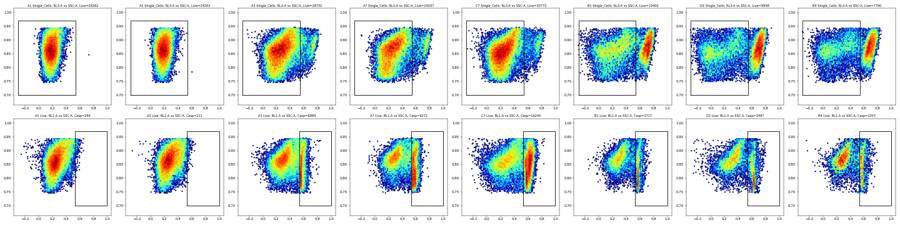
179
tool call · Bash
cd /task/work; python -c "
import flowkit as fk, numpy as np, pandas as pd
g=fk.parse_gating_xml('/task/outputs/gates.xml'); lay=pd.read_csv('/task/inputs/plate_layout.csv')
out=[]
for f,w in zip(lay.file,lay.well):
s=fk.Sample('/task/inputs/raw/'+f); r=g.gate_sample(s); d=s.get_events(source='raw'); i=s.pnn_labels.index('RL3-A')
sc=r.get_gate_membership('Single_Cells'); out.append((w, int((sc&(d[:,i]<-6748)).sum()), round(np.mean(d[sc,i]<-6748)*100,2)))
print(out)
"180
tool output
[('A1', 0, 0.0), ('A2', 0, 0.0), ('A3', 0, 0.0), ('A5', 9, 0.04), ('A7', 0, 0.0), ('A8', 1, 0.0), ('A9', 0, 0.0), ('A10', 12, 0.05), ('A11', 5, 0.02), ('B1', 18, 0.1), ('B2', 4, 0.03), ('B3', 0, 0.0), ('B4', 4, 0.02), ('B5', 2, 0.02), ('B6', 0, 0.0), ('C1', 0, 0.0), ('C2', 0, 0.0), ('C3', 0, 0.0), ('C5', 4, 0.02), ('C7', 0, 0.0), ('C8', 2, 0.01), ('C9', 6, 0.02), ('C10', 8, 0.03), ('C11', 14, 0.07), ('D1', 10, 0.04), ('D2', 6, 0.02), ('D3', 20, 0.09), ('D4', 2, 0.02), ('D5', 3, 0.05), ('D6', 9, 0.08)]182
tool call · Bash
cd /task/work; python -c "
from common import *
from gates_def import CELLS
P=np.array(CELLS); print('FSC range', P[:,0].min(), P[:,0].max(), TS.inverse(np.array([P[:,0].min(),P[:,0].max()])).round(0))
print('SSC range', P[:,1].min(), P[:,1].max(), TS.inverse(np.array([P[:,1].min(),P[:,1].max()])).round(0))
print('center', TS.inverse(np.array([0.858,0.845])).round(0))
"; python -c "
import pandas as pd; c=pd.read_csv('/task/outputs/counts.csv'); p=c.pivot(index='well',columns='population',values='pct_of_parent'); print(p.describe().round(1))"183
tool output
FSC range 0.7651 0.9509 [ 40864. 532115.] SSC range 0.7446 0.9454 [ 30788. 493181.] center [147447. 123209.] population Caspase_pos Cells Live Single_Cells count 30.0 30.0 30.0 30.0 mean 32.1 34.2 62.6 88.8 std 15.4 3.1 33.2 2.2 min 0.1 28.4 1.4 84.3 25% 28.3 32.5 45.7 87.2 50% 33.0 33.6 70.6 89.4 75% 37.3 36.4 89.7 90.2 max 63.2 41.6 100.0 92.4
184
tool call · Write
{
"file_path": "/task/outputs/notes.md",
"content": "# CellEvent caspase-3/7 + Zombie NIR, mouse primary neurons (Attune NxT, 20-Mar-2023): gating notes\n\n## Gates\nI built one FlowKit strategy (`gates.xml`) and applied it unchanged to all 30 wells, on raw uncompensated data with no subsampling. Two logicle transforms are used: scatter (T=1048576, W=0.5, M=6) and fluorescence (T=1048576, W=1.0, M=6). Gate coordinates are given on these logicle scales unless marked raw.\n- **Cells** (root; PolygonGate, FSC-A \u00d7 SSC-A, logicle). This is a 24-vertex ellipse centred at FSC \u2248 147k and SSC \u2248 123k. Its edges are FSC-A \u2248 41k\u2013532k and SSC-A \u2248 31k\u2013493k.\n - On log scatter, the Zombie-negative events form two clusters: intact neurons (FSC \u2248 180k, SSC \u2248 160k) and a smaller, shrunken cluster (FSC \u2248 50\u2013100k) that carries most of the CellEvent\u207a events. The ellipse includes both.\n - It excludes low-FSC/low-SSC debris near the 25k FSC threshold, the large high-FSC/high-SSC aggregates, and all SSC-saturated events. 13\u201340 % of events in every well sit at SSC-A = 1,048,575.\n- **Single_Cells** (PolygonGate, linear SSC-A \u00d7 SSC-H). This is a 4-vertex band along the singlet diagonal: (20k,13.6k), (550k,330k), (550k,560k), (20k,25k). The lower edge (H/A \u2248 0.6\u20130.68) removes the wide-pulse doublet/aggregate tail, and the upper edge removes H>A artefacts. It keeps 84\u201392 % of Cells.\n- **Live** (RectangleGate, RL3-A \u22120.30\u20260.54 \u00d7 SSC-A 0.70\u20260.97). The RL3-A upper limit of 0.54 is \u2248 1,940 raw.\n - The unstained wells A1/C1 and the effectively unstained A2/C2 (see QC) put Zombie-negative events at \u22640.47; 0\u20130.01 % of their singlets lie above 0.54.\n - In the double-stained wells there is a Zombie-dim live population (0.1\u20130.5) and a separate Zombie-bright population (0.6\u20130.85). Pooled across stained wells, the valley minimum is at 0.52\u20130.56.\n - The treated wells (B1, B4, D1\u2013D3) confirm that the bright population falls entirely outside the gate.\n - The SSC-A limits (\u2248 17k\u2013690k) enclose the whole Cells gate, so they only exclude scatter extremes. The lower RL3 limit removes \u22640.1 % of events.\n- **Caspase_pos** (RectangleGate, BL1-A \u2265 0.53 (\u2248 1,700 raw; no upper limit) \u00d7 SSC-A 0.70\u20260.97).\n - Caspase-negative events end at about 0.5 in A1/C1 and A2/C2. Above 0.53 there are only 1.0 % (A1), 0.9 % (A2), 0.1 % (C1) and 0.1 % (C2) of their Live events.\n - The CellEvent\u207a events form a narrow, scatter-independent stripe (DNA-bound dye) at 0.55\u20130.63 (\u2248 2,600\u20136,100 raw), so the boundary sits just below its lower edge in every well.\n- The `AAV-GFP-Caspase-A` label on BL1-A is stale and was ignored; BL1-A is CellEvent only.\n\n## Quality control\nI judged each well on the following:\n- total events and event rate;\n- time-resolved rate in 0.1 s and 0.25 s bins. A \"stop\" is a bin below 20 % of the 5-s rolling median; I also counted bursts above 2\u00d7 and computed the detrended coefficient of variation (CV);\n- rate in the last 6 s (running dry);\n- % of events at scale maximum, per channel;\n- whether each control's staining pattern matches its label;\n- Live event count (minimum 500 for a usable Caspase_pos %);\n- whether each well is in family with its controls and replicates.\n\nResults:\n- **Controls (bad_control).**\n - A2/C2 (\"Zombie only\") contain no Zombie signal. They have 0\u20131 Zombie-bright singlets and are indistinguishable from A1/C1.\n - A3/C3 (\"caspase only\") contain Zombie-bright cells (6.8 %/9.5 %) as well as CellEvent\u207a cells, i.e. they look double-stained.\n - The WT vehicle A5 is out of family: 24 % Zombie-bright, versus 8.5 % in NT A7, 11 % at 1 \u00b5M CPT and 7.9 % in the KO vehicle C5.\n- **too_few_events.** B5, B6, D5 and D6 have only 80\u2013378 Live events because 92\u201396 % of their singlets are Zombie-bright. B6 also has only 8,004 events in total. These are also the four wells with no plate-map entry.\n- **clog_or_interrupted_flow.** D3 is the plate outlier: 17 stops totalling 4.2 s, 34 % of events acquired during stop/burst periods, and a rate CV of 0.53 against a plate median of about 0.20.\n- **Plate-wide issues, not flagged:**\n - Flow became intermittent as the run went on. A3/A7\u2013A9 are clean; most later wells have brief stops between 20 and 35 s. In every well except D3, excluding the stop/burst periods changes Live % and Caspase_pos % by less than 0.5 points.\n - About 10 wells (C5, C7, C9, C10, D1, D2, D4, etc.) taper off in the final ~1.5 s (sample ran out). This affects less than 2 % of events.\n - SSC-A saturation is plate-wide and is excluded by the Cells gate. Fluorescence saturation is at most 1 % (RL3-A in mostly-dead wells).\n- **Kept usable but worth noting:** the 20 \u00b5M replicates disagree. Live is 21 % in B3 vs 42 % in B4, and 45 % in D3 vs 8.8 % in D4. B3 and D4 resemble the mostly-dead unrecorded wells (low debris, more than 75 % Zombie-bright). A high-dose death effect is plausible, so I did not flag them.\n- Untreated A7/C7 have the highest Caspase_pos % on the plate (46 %/53 %), so the caspase readout does not track the CPT dose.\n\n## Deviations from the strategy\n1. **Live boundary.** The Zombie-negative boundary could not be read from A3/C3 as instructed, because those wells contain Zombie-bright cells. I used A1/C1, A2/C2 and the dim/bright valley in the stained wells instead.\n2. **Caspase-negative reference.** A2/C2 contain no Zombie dye, so they served only as unstained-equivalent caspase-negative references.\n3. **Cells gate shape.** The Cells ellipse is a polygon approximation drawn on logicle (not linear) scatter axes. It deliberately keeps the shrunken, low-FSC CellEvent\u207a cluster.\n4. **Fluorescence gates.** Both fluorescence gates are rectangles on logicle axes. Caspase_pos has no upper BL1-A limit.\n5. **No time or clean-up g
… [124 more characters not shown]185
tool output
File created successfully at: /task/outputs/notes.md (file state is current in your context — no need to Read it back)
187
tool call · Bash
cd /task/work; sed -i 's/Untreated A7\/C7 have the highest Caspase_pos % on the plate (46 %\/53 %)/Untreated A7\/C7 have the highest Caspase_pos % of all usable wells (46 %\/53 %)/' /task/outputs/notes.md; grep -c "usable wells (46" /task/outputs/notes.md; wc -w /task/outputs/notes.md
python -I - <<'EOF'
import flowkit as fk, pandas as pd
g=fk.parse_gating_xml('/task/outputs/gates.xml')
c=pd.read_csv('/task/outputs/counts.csv'); f=pd.read_csv('/task/outputs/flags.csv')
bad=0
for fn in c.file.unique():
r=g.gate_sample(fk.Sample('/task/inputs/raw/'+fn)).report
for p in ['Cells','Single_Cells','Live','Caspase_pos']:
a=int(r.loc[r.gate_name==p,'count'].iloc[0]); b=int(c[(c.file==fn)&(c.population==p)]['count'].iloc[0])
bad+= a!=b
print('mismatches',bad, 'rows',len(c), 'flags rows',len(f), f.usable.value_counts().to_dict())
assert set(f.columns)=={'file','well','usable','reason_category','evidence'}
assert all(('confidence=' in e) for e in f.loc[f.usable=='no','evidence'])
assert all(f.loc[f.usable=='yes','reason_category']=='ok')
print(g.get_gate_ids())
EOF
ls -la /task/outputs188
tool output
1
962 /task/outputs/notes.md
mismatches 0 rows 120 flags rows 30 {'yes': 20, 'no': 10}
[('Cells', ('root',)), ('Single_Cells', ('root', 'Cells')), ('Live', ('root', 'Cells', 'Single_Cells')), ('Caspase_pos', ('root', 'Cells', 'Single_Cells', 'Live'))]
total 44
drwxr-xr-x 2 root root 4096 Nov 10 17:23 .
drwxr-xr-x 5 root root 4096 Nov 10 17:08 ..
-rw-r--r-- 1 root root 9451 Nov 10 17:16 counts.csv
-rw-r--r-- 1 root root 6154 Nov 10 17:21 flags.csv
-rw-r--r-- 1 root root 6645 Nov 10 17:16 gates.xml
-rw-r--r-- 1 root root 5868 Nov 10 17:23 notes.md
[This command modified 1 file you've previously read: ../outputs/notes.md. Call Read before editing.]190
agent
Status: all deliverables written and validated (0 count mismatches against the reloaded gates). `notes.md` is 962 words, probably over the one-page limit, so I'm tightening it.
191
tool call · Write
{
"file_path": "/task/outputs/notes.md",
"content": "# Caspase-3/7 + Zombie NIR, primary neurons: gating notes\n\n## Gates\nOne FlowKit strategy, applied unchanged to all 30 wells, on raw uncompensated data with no subsampling. Gates are drawn on logicle axes: scatter T=2^20, W=0.5, M=6; fluorescence T=2^20, W=1.0, M=6.\n- **Cells** (FSC-A \u00d7 SSC-A polygon, a 24-vertex ellipse). Centre FSC \u2248 147k, SSC \u2248 123k; extent FSC \u2248 41k\u2013532k, SSC \u2248 31k\u2013493k.\n - Zombie-negative events form two clusters: intact neurons (FSC \u2248 180k) and a shrunken cluster (FSC \u2248 50\u2013100k) that holds most CellEvent\u207a cells. The ellipse keeps both.\n - It excludes low-FSC debris near the 25k threshold, large aggregates, and all SSC-A-saturated events (13\u201340 % of events in every well sit at 1,048,575).\n- **Single_Cells** (linear SSC-A \u00d7 SSC-H, 4-vertex band): (20k,13.6k), (550k,330k), (550k,560k), (20k,25k). The lower edge (H/A \u2248 0.6\u20130.68) cuts the wide-pulse doublet tail. Keeps 84\u201392 % of Cells.\n- **Live** (rectangle: RL3-A \u22120.30\u20260.54, i.e. \u2264 \u2248 1,940 raw; SSC-A 0.70\u20260.97).\n - Unstained A1/C1 and the effectively unstained A2/C2 sit at \u2264 0.47; 0\u20130.01 % of their singlets are above 0.54.\n - The stained wells show a Zombie-dim live peak (0.1\u20130.5) and a separate bright dead peak (0.6\u20130.85). The pooled valley is at 0.52\u20130.56.\n - Treated wells (B1, B4, D1\u2013D3) confirm the bright peak falls outside the gate.\n - The SSC-A limits enclose the whole Cells gate, so they only exclude scatter extremes.\n- **Caspase_pos** (rectangle: BL1-A \u2265 0.53, i.e. \u2248 1,700 raw, no upper limit; same SSC-A limits).\n - The boundary sits above the caspase-negative events of A1/C1/A2/C2; only 1.0 / 0.1 / 0.9 / 0.1 % of their Live events are above it.\n - It sits just below the narrow, scatter-independent CellEvent\u207a stripe (\u2248 2,600\u20136,100 raw) in every well.\n- The `AAV-GFP` part of the BL1-A label is stale and was ignored.\n\n## Quality control\nEach well was checked for:\n- total events and event rate;\n- event rate over Time in 0.1/0.25-s bins: stops (<20 % of the 5-s rolling median), bursts (>2\u00d7), and the detrended coefficient of variation (CV);\n- the last 6 s of the run;\n- % of events at scale maximum, per channel;\n- whether each control's staining matches its label;\n- at least 500 Live events;\n- agreement with its controls and replicates.\n\nFlagged:\n- **bad_control**\n - A2/C2 (\"Zombie only\") have no Zombie signal; they look identical to unstained A1/C1.\n - A3/C3 (\"caspase only\") contain Zombie-bright cells (6.8 / 9.5 %).\n - The WT vehicle A5 is 24 % Zombie-bright, against 8.5 % in NT A7 and 7.9 % in KO vehicle C5.\n- **too_few_events**: B5, B6, D5, D6 have 80\u2013378 Live events (92\u201396 % of singlets are dead). These are the four wells with no plate-map entry.\n- **clog_or_interrupted_flow**: D3 has 17 stops totalling 4.2 s, 34 % of its events fall in stop/burst periods, and its rate CV is 0.53 (plate median about 0.20).\n\nNot flagged:\n- Flow became intermittent as the run went on (brief stops at 20\u201335 s in most later wells). Outside D3, excluding the disturbed periods changes Live % and Caspase_pos % by less than 0.5 points.\n- About 10 wells taper off in the last ~1.5 s (sample running out), affecting less than 2 % of events.\n- Fluorescence saturation is \u2264 1 %.\n\nWorth noting:\n- The 20 \u00b5M replicates disagree on Live %: B3 21 % vs B4 42 %, and D3 45 % vs D4 8.8 %. I kept them, because heavy death at high dose is plausible.\n- Untreated A7/C7 have the highest Caspase_pos % of all usable wells (46 / 53 %).\n\n## Deviations from the strategy\n1. The Zombie-negative boundary could not be set from A3/C3 because they contain Zombie. I used A1/C1, A2/C2 and the valley between the dim and bright peaks instead.\n2. A2/C2 lack Zombie dye, so they served only as unstained-equivalent caspase-negative references.\n3. The Cells ellipse is a polygon on logicle (not linear) scatter axes, and it deliberately keeps the shrunken low-FSC CellEvent\u207a cluster.\n4. The fluorescence rectangles are on logicle axes, and Caspase_pos has no BL1-A maximum.\n5. No time gate is allowed, so time-resolved problems are handled by flags, not by gating.\n"
}192
tool output
The file /task/outputs/notes.md has been updated successfully. (file state is current in your context — no need to Read it back)
193
tool call · Bash
wc -w /task/outputs/notes.md; grep -n '^## ' /task/outputs/notes.md
194
tool output
695 /task/outputs/notes.md 3:## Gates 19:## Quality control 46:## Deviations from the strategy
196
agent
I gated all 30 wells with one FlowKit strategy (Cells → Single_Cells → Live → Caspase_pos) and flagged 10 wells as unusable. All four files are in `/task/outputs/`. `gates.xml` reloads with `parse_gating_xml`, and re-gating every file from it reproduces all 120 rows of `counts.csv` exactly.
**Gates** (on logicle axes, raw uncompensated data, no subsampling)
- **Cells:** a 24-point ellipse on FSC-A × SSC-A. It keeps both the intact-neuron cluster and a shrunken low-FSC cluster that holds most of the caspase-positive cells. It excludes debris near the threshold and all SSC-A-saturated events; 13–40 % of events in every well sit at the SSC-A maximum.
- **Single_Cells:** a 4-point band along the SSC-A vs SSC-H diagonal. It keeps 84–92 % of Cells.
- **Live:** RL3-A below about 1,940 raw, in the valley between the dim live and bright dead Zombie populations. Unstained wells have at most 0.01 % of events above it.
- **Caspase_pos:** BL1-A above about 1,700 raw, with no upper limit. At most 1 % of live events in A1/C1/A2/C2 fall above it, and it sits just below the narrow caspase-positive band in every well.
**Flagged wells**
| Wells | Category | Why |
|---|---|---|
| A2, C2 | `bad_control` (high) | Labelled "Zombie only" but no Zombie signal; they look identical to the unstained wells. |
| A3, C3 | `bad_control` (high) | Labelled "caspase only" but 6.8 % / 9.5 % of cells are Zombie-bright, so they are effectively double-stained. |
| A5 | `bad_control` (medium) | WT vehicle is 24 % Zombie-bright, against 8.5 % in untreated A7 and 7.9 % in the KO vehicle C5. |
| B5, B6, D5, D6 | `too_few_events` | Only 80–378 Live events (92–96 % of cells dead). These are also the four wells with no plate-map entry. |
| D3 | `clog_or_interrupted_flow` (medium) | Worst flow on the plate: 17 stops totalling 4.2 s, with 34 % of its events acquired during stops or bursts. |
**Judgement calls you may want to revisit**
- **Live boundary:** the strategy says to set it using A3/C3, but those wells contain Zombie. I set it from A1/C1, A2/C2 and the live/dead valley instead. This and the other departures are listed in `notes.md`.
- **Flow problems:** these get worse over the run, and most later wells have brief stops between 20 and 35 s. I flagged only D3, because in every other well leaving out the disturbed periods changes Live % and Caspase_pos % by less than 0.5 points. C10, C11 and D1 are the next worst if you want a stricter cut.
- **Not flagged:** about 10 wells tail off in the last ~1.5 s (sample running out), which touches less than 2 % of events.
- **20 µM replicates:** these disagree (Live 21 % in B3 vs 42 % in B4; 45 % in D3 vs 8.8 % in D4). I kept them, since heavy death at the top dose is plausible.
- **Caspase readout:** untreated A7/C7 have the highest Caspase_pos % of all usable wells (46 % and 53 %), so it does not rise with camptothecin dose.
- **Threshold:** the cut-off of 500 Live events for a usable percentage is my own choice.
Files are in `/task/outputs/`:
- `gates.xml`
- `counts.csv`
- `flags.csv`
- `notes.md`
final result
I gated all 30 wells with one FlowKit strategy (Cells → Single_Cells → Live → Caspase_pos) and flagged 10 wells as unusable. All four files are in `/task/outputs/`. `gates.xml` reloads with `parse_gating_xml`, and re-gating every file from it reproduces all 120 rows of `counts.csv` exactly. **Gates** (on logicle axes, raw uncompensated data, no subsampling) - **Cells:** a 24-point ellipse on FSC-A × SSC-A. It keeps both the intact-neuron cluster and a shrunken low-FSC cluster that holds most of the caspase-positive cells. It excludes debris near the threshold and all SSC-A-saturated events; 13–40 % of events in every well sit at the SSC-A maximum. - **Single_Cells:** a 4-point band along the SSC-A vs SSC-H diagonal. It keeps 84–92 % of Cells. - **Live:** RL3-A below about 1,940 raw, in the valley between the dim live and bright dead Zombie populations. Unstained wells have at most 0.01 % of events above it. - **Caspase_pos:** BL1-A above about 1,700 raw, with no upper limit. At most 1 % of live events in A1/C1/A2/C2 fall above it, and it sits just below the narrow caspase-positive band in every well. **Flagged wells** | Wells | Category | Why | |---|---|---| | A2, C2 | `bad_control` (high) | Labelled "Zombie only" but no Zombie signal; they look identical to the unstained wells. | | A3, C3 | `bad_control` (high) | Labelled "caspase only" but 6.8 % / 9.5 % of cells are Zombie-bright, so they are effectively double-stained. | | A5 | `bad_control` (medium) | WT vehicle is 24 % Zombie-bright, against 8.5 % in untreated A7 and 7.9 % in the KO vehicle C5. | | B5, B6, D5, D6 | `too_few_events` | Only 80–378 Live events (92–96 % of cells dead). These are also the four wells with no plate-map entry. | | D3 | `clog_or_interrupted_flow` (medium) | Worst flow on the plate: 17 stops totalling 4.2 s, with 34 % of its events acquired during stops or bursts. | **Judgement calls you may want to revisit** - **Live boundary:** the strategy says to set it using A3/C3, but those wells contain Zombie. I set it from A1/C1, A2/C2 and the live/dead valley instead. This and the other departures are listed in `notes.md`. - **Flow problems:** these get worse over the run, and most later wells have brief stops between 20 and 35 s. I flagged only D3, because in every other well leaving out the disturbed periods changes Live % and Caspase_pos % by less than 0.5 points. C10, C11 and D1 are the next worst if you want a stricter cut. - **Not flagged:** about 10 wells tail off in the last ~1.5 s (sample running out), which touches less than 2 % of events. - **20 µM replicates:** these disagree (Live 21 % in B3 vs 42 % in B4; 45 % in D3 vs 8.8 % in D4). I kept them, since heavy death at the top dose is plausible. - **Caspase readout:** untreated A7/C7 have the highest Caspase_pos % of all usable wells (46 % and 53 %), so it does not rise with camptothecin dose. - **Threshold:** the cut-off of 500 Live events for a usable percentage is my own choice. Files are in `/task/outputs/`: - `gates.xml` - `counts.csv` - `flags.csv` - `notes.md`